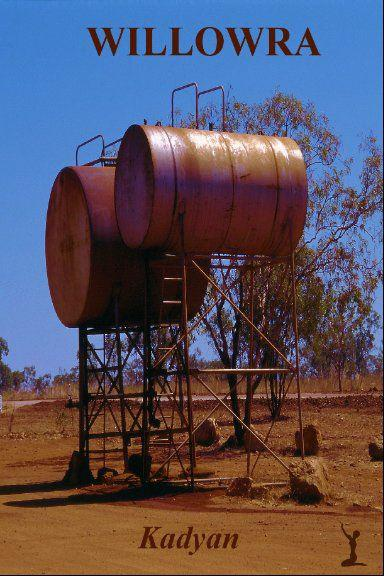

WILLOWRA

Kadyan
© Kadyan 2013
e-mail : mma@kadyan.fr - site : www.kadyan.fr
isbn : 979-10-92451-01-6
Le code de la propriété intellectuelle Interdit les copies ou reproductions destinées à une utilisation collective. Toute représentation ou reproduction Intégrale ou partielle faite par quelque procédé que ce soit, sans le consentement de l’auteur ou de ses ayants cause, est Illicite et constitue une contrefaçon sanctionnée par les articles L.335-2 et suivants du Code de la propriété Intellectuelle.
Photo et couverture @Kadyan
Pour MP, encore et toujours.
Merci à ma soeur qui a toujours préféré les aiguilles aux mots.
Chapitre 1
Sydney, Nouvelle Galle du Sud, 2006
Lorsqu’elle entendit la musique de son téléphone portable, Gabrielle soupira et posa à côté d’elle sur le siège vacant le Sydney Morning Herald qu’elle tentait de lire depuis le départ du ferry. Elle était en retard et savait bien qui l’appelait. Tout en fourrageant dans son petit sac à dos de ville à la recherche du maudit téléphone, Gabrielle commença à se blinder contre les remontrances qu’elle allait entendre. Un coup d’œil à l’écran pour vérifier le nom de son interlocutrice et, d’un coup de pouce hésitant, elle pressa la touche de mise en communication.
— Gab, où es-tu ?
— Je suis en retard, je sais. Je suis toujours sur le bateau. Nous quittons juste Old Cremone. Je serai à la maison dans dix minutes maximum.
— Nous devions aller au restaurant…
— Je sais.
Soupir puis silence à l’autre bout du fil. La culpabilité envahit Gabrielle.
— Tess…
Les mots manquaient à Gabrielle. Quelle excuse pourrait-elle trouver pour justifier un nouveau retard ? Aucune, murmura sa conscience. Tess savait parfaitement qu’elle ne prenait plus de consultation après 17 heures sauf cas d’urgence et, des urgences, Gabrielle n’en avait pas tous les jours. Si elle voulait rester honnête avec elle-même, elle devait admettre qu’il lui fallait faire face à la situation une bonne fois pour toute. Mais comment ?
— Tess, il faut…qu’on parle, reprit Gabrielle d’une voix un peu plus ferme mais encore hésitante.
— Je n’aurais jamais cru que de simples paroles puissent à la fois soulager et angoisser autant, murmura Tess, des larmes dans la voix. Je t’attends, dépêche-toi.
La tonalité signala à Gabrielle que Tess avait raccroché mais, comme anesthésiée, elle conserva le téléphone collé contre son oreille. C’était elle qui venait de proposer à Tess une discussion ? Une discussion où elle aurait à expliquer pourquoi depuis deux mois elle rentrait de plus en plus tard ? Pourquoi elle traînait les pieds pour toute activité avec Tess en dehors de son travail ? Gabrielle, le regard fixé sur l’étendue d’eau, respira à pleins poumons pour tenter de calmer les battements affolés de son cœur. Elle regrettait déjà d’avoir quitté Circular Quay et la sécurité de son cabinet tout proche. Le bruit de la tonalité pénétra enfin son cerveau. Par réflexe, elle coupa la ligne avant de ranger le téléphone dans son sac. Dix minutes. Dans dix minutes maximum, elle devrait affronter Tess. Déjà, elle percevait le ralentissement des puissants moteurs du bateau. Bientôt, toute la coque vibrerait lorsque le pilote ferait machine arrière pour ralentir. Ensuite, il y aurait le choc contre le ponton et la ruée vers la sortie. Quoique, à cette heure-ci, parler de ruée était un peu fort. Tess pleurait au téléphone. Le cœur de Gabrielle se serra. Elle ne voulait pas faire pleurer Tess. Tess était la femme de sa vie. Leur rencontre à la soirée de la faculté de médecine lors de leur quatrième année avait chamboulé la vie de Gabrielle. Elle qui voletait d’une femme à l’autre sans jamais se fixer était tombée pieds et poings liés en l’espace d’une simple soirée. Huit ans déjà. Tout en quittant le bateau, Gabrielle se souvint de cette soirée. Son regard avait immédiatement été attiré par cette grande rouquine à la démarche svelte. Jamais auparavant elle ne l’avait vue sur le campus, Gabrielle aurait pu le jurer. Sans hésiter un instant, comme attirée par un aimant, elle était allée vers cette femme esseulée qui restait dans son coin. Les yeux verts et le sourire avaient achevé de faire fondre son cœur mais Tess avait résisté. Elle sourit toute seule en quittant la jetée pour prendre la petite route qui menait à leur maison. Six mois. Tess avait résisté six longs mois avant d’accepter la sincérité des sentiments de Gabrielle. Un an après leur rencontre elles emménageaient ensemble et depuis tout avait été parfait…sauf depuis deux mois. « Qu’est-ce qui ne va pas avec moi ? » se maudit Gabrielle. « J’ai une femme superbe, un travail intéressant, une belle maison et des amis. Que demander de plus ? Ne pas faire pleurer la femme que j’aime parce que je ne suis pas capable d’assumer une décision commune… »
20h 58. Devant la porte de leur maison, achetée depuis un an, Gabrielle hésitait. Les grands arbres et les buissons plantés tout autour en faisait un havre de paix mais, depuis deux mois, c’était devenu un lieu de tourments qui reflétait ses peurs. Comment expliquer à Tess ? Le regard de Tess au travers de la porte vitrée força Gabrielle à franchir les quelques mètres restant et à ouvrir la porte. Les deux femmes se firent face. Les yeux rougis de Tess furent un nouveau coup de poignard dans le cœur de Gabrielle. Sans la quitter du regard, elle leva la main pour caresser la joue couverte de tâches de rousseur mais Tess, comme frappée, recula le visage. Gabrielle baissa la tête puis ferma les yeux pour absorber la douleur du rejet. Elle n’avait que ce qu’elle méritait mais cela faisait mal.
— J’ai annulé le restaurant, dit Tess d’une voix froide en s’éloignant vers la terrasse en bois sans un autre regard en arrière.
Mue par l’habitude, Gabrielle rangea sa sacoche et son sac dans le placard de la minuscule entrée. Un instant, elle appuya son front contre la porte en bois exotique. Elle aurait voulu se taper la tête contre les murs pour chasser ses peurs, pour forcer les mots d’explication à franchir ses lèvres. Elle, toujours si contrôlée, maudit son incapacité à formuler ses faiblesses. Il fallait qu’elle fît un effort, pour Tess, pour leur couple. Sa décision prise, Gabrielle inspira un bon coup avant de rejoindre Tess déjà installée sur un des fauteuils en rotin.
Malgré les arbres, la vue sur une petite partie de la baie de Sydney la prit encore une fois à la gorge. C’était cette vue qui, malgré le prix, avait forcé leur choix pour cette maison sans trop de prétention sur Mosman Bay. Les kookaburras qui logeaient dans les eucalyptus étaient un plus qu’elles n’avaient pas entendu en visitant et dont elles se seraient bien passées lorsqu’elles voulaient faire la grasse matinée mais Tess aimait tellement leur ricanement moqueur que Gabrielle les supportait stoïquement. Elle se servit un grand verre de jus de tamarin à la carafe posée sur la table basse avant de s’asseoir sur le fauteuil à côté de Tess.
— Tu vas me quitter, c’est ça ?
Aux paroles de Tess, Gabrielle ouvrit de grands yeux. Les larmes qui coulaient sur le visage de la femme qu’elle aimait bloquèrent les mots au fond de sa gorge. Panique. Où Tess avait-t-elle pris cette idée ? Elle tenta de secouer la tête pour refuser ces paroles.
— Comment s’appelle-t-elle ? Non, ne dis rien. Comment peux-tu me faire ça ? Maintenant ?
Comme pour le protéger, Tess posa la main sur son ventre. Incapable de proférer un son malgré les hurlements de son esprit, Gabrielle s’empara de la main de Tess mais celle-ci se dégagea brusquement.
— C’est notre bébé. On l’a voulu toutes les deux et, maintenant, tu veux me quitter !
Désespoir dans la voix de Tess. Les larmes montèrent dans les yeux de Gabrielle. Elle secoua la tête, essaya une nouvelle fois de s’emparer sans succès de la main de Tess. Comment Tess pouvait-elle penser qu’il y avait quelqu’un d’autre ? Il n’y aurait jamais quelqu’un d’autre. Gabrielle s’agenouilla devant Tess, lui prit la main qu’elle tint serrée pour l’empêcher de partir. Cette main l’ancrait, lui donnait de la force. Ses yeux sombres plongèrent dans les yeux verts. Elle força les mots à quitter sa gorge nouée :
— Tess, arrête. Ecoute-moi.
Le sérieux dans le ton et sur le visage de Gabrielle figea tout mouvement dans le corps de Tess. Elle eut même l’impression de ne plus respirer. Elle attendait l’inéluctable, voulut se blinder contre l’écroulement de son monde. Les larmes inhabituelles dans les yeux de sa partenaire étaient un indice supplémentaire. Depuis deux mois que Gab rentrait de plus en plus tard en fournissant des excuses plus vaseuses les unes que les autres, elle avait vite compris : Gab allait l’abandonner.
— Tess…il n’y a personne d’autre que toi. Depuis huit ans, il n’y a eu personne. Ne comprends-tu pas que je t’aime, que je t’aimerai jusqu’à la fin de ma vie ? Je te le jure sur ce que j’ai de plus cher.
L’étonnement s’inscrivit sur le visage de Tess. Elle ne comprenait pas. Que venait de dire Gab ? Qu’il n’y avait personne d’autre ? Tess ferma les yeux. Le soulagement l’envahit. Personne d’autre…Gab n’allait pas la quitter ? Serait-il possible qu’il ne s’agît que d’un cauchemar ? Les larmes coulèrent sur ses joues, vite essuyées par la main de Gab qui frôlait son visage. Les mains de Tess glissèrent sur les épaules de Gab, l’enlacèrent, l’attirèrent contre elle. Gabrielle posa sa tête sur le ventre de Tess. Toutes les deux, blotties l’une contre l’autre, laissèrent couler leurs larmes.
— Alors pourquoi rentres-tu de plus en plus tard alors que je sais que tu n’as pas plus de patients que d’habitude ? Pourquoi ne me fais-tu plus l’amour ? Ne me parles-tu plus ? Ne plaisantes-tu plus ?
— Je suis désolée. Je…
Les mots se bloquèrent dans la gorge de Gabrielle, les larmes redoublèrent. Jamais elle n’aurait imaginé que Tess pût penser qu’elle avait rencontré quelqu’un d’autre. Elle s’en voulait d’avoir fait souffrir l’amour de sa vie. Deux mois qu’elle muselait ses peurs et ses doutes ; les deux mois les plus long de sa vie depuis que les examens lui avaient confirmé que l’insémination artificielle avait réussi.
— Chhh, tiens-moi serrée, Gab. J’ai besoin de te sentir contre moi.
Lentement, les minutes s’écoulaient. Les bruits de la nuit qui montaient autour d’elles, interrompus de temps en temps par le bruit d’une voiture ou d’un bateau empressé de regagner son amarrage. N’y tenant plus, Tess recula légèrement. Elle voulait voir les yeux de Gab pour se rassurer complètement ; les yeux de Gab ne mentaient jamais. Doucement, du bout des doigts, elle força le visage enfoui contre son ventre à se tourner vers elle pour plonger dans les grands yeux sombres. Sous la lumière douce de la lampe à l’angle de la terrasse, elle avait peine à distinguer l’intensité du regard de Gab. L’émotion la submergea tandis que, du bout des doigts, elle caressait le beau visage ovale de Gab ; les pommettes saillantes, le nez fin, les lèvres pleines… Les larmes perlèrent à nouveau dans ses yeux.
— Tu es si belle et j’ai cru t’avoir perdue.
— Ne pleure pas, Tess, je t’en supplie. Je suis désolée.
Les lèvres de Tess frôlèrent doucement celles de Gab qui ferma les yeux. Sous l’insistance de ses petits baisers, Gabrielle commença à répondre, d’abord gentiment, puis avec de plus en plus de passion. Deux mois qu’elle n’avait pas touché Tess, la douceur de sa peau, la saveur de ses lèvres. La main de Gab souleva le tee-shirt de Tess, caressa la poitrine maintenant beaucoup plus pleine. Tess gémit sous l’assaut conjugué de la bouche et des mains de Gab. Elle voulut protester lorsque les lèvres douces quittèrent les siennes mais se contenta d’un soupir en sentant ces merveilleuses lèvres sur son sein droit tandis que la main de Gab jouait avec le gauche. Oubliant qu’elles étaient sur la terrasse et que quelqu’un pourrait les voir malgré l’obscurité et la végétation, Tess, la respiration courte, ferma les yeux et posa la tête en arrière sur le dossier du fauteuil.
La main libre de Gabrielle explora un instant la peau douce avant de glisser vers le bouton du short de Tess qu’elle défit d’une main experte. Sa bouche quitta le sein érigé pour aller jouer avec l’autre. Les gémissements poussés par Tess augmentaient son désir, la poussaient à accélérer les choses mais Gab résista, elle voulait prendre son temps, seule Tess comptait. Que ce corps souple et doux lui avait manqué ! La fermeture éclair descendue, les mains de Gab saisirent le short pour le pousser vers le bas. Tess souleva les hanches pour l’aider, son bassin entra en contact avec le torse de Gab. Gémissement de plaisir. Gabrielle souleva la tête pour plonger directement dans le regard vert, voilé de désir, de Tess. Leurs bouches se rencontrèrent, leurs langues se battirent en duel jusqu’à ce que Gab décidât de succomber au feu qui coulait dans ses veines. Elle détacha ses lèvres de celles de Tess puis, déposant de petits baisers sur son chemin, continua lentement son voyage vers le bas. Ses mains se glissèrent sous les fesses de Tess pour l’attirer vers le bord du fauteuil, obligeant Tess à écarter un peu plus les jambes. Incapable de résister plus longtemps, la bouche de Gabrielle plongea immédiatement vers la douceur offerte. Un râle de plaisir s’échappa de la gorge de Tess, sa jouissance proche... Bientôt…
Tess observa la forme endormie à ses côtés. La première fois qu’elle l’avait rencontrée, elle avait su que cette femme posséderait son cœur, sa vie, si elle le désirait. Qu’elle était belle cette jeune femme qui s’était approchée d’elle ce soir là ! Regard intense des yeux sombres en amande, mâchoire volontaire et sourire à vendre père et mère. Elle n’avait pas su résister à la tentation de plonger ses mains dans la chevelure ondulée, noire et épaisse, malgré la réputation de dragueuse impénitente qui la précédait. Qu’elle était toujours belle cette femme qui était la lumière de sa vie et ce qu’elle avait pu avoir peur de la perdre ces derniers mois ! Une vague de doute déferla sur Tess. L’alerte était-elle réellement passée ? Tess grimaça. Gabrielle s’était excusée mais n’avait pas fourni de raison à son comportement. Maintenant qu’elle savait que Gab ne la trompait pas, Tess soupçonnait la cause du malaise de Gab, mais, pour résoudre ce problème, il n’y aurait que la communication. Tess stoppa un rire de gorge sans joie. Communication ? Avec Gab ? Autant lui arracher une dent, cela serait moins douloureux !
La main de Tess frôla les cheveux épais de Gabrielle alors qu’elle déposa un baiser léger sur son omoplate. Un sourire aux lèvres, elle contemplait le corps parfait qui s’étirait devant elle. Oui, elles devraient parler, pas demain ni ce soir, ce matin. A l’aveuglette, la main de Gab chercha la douce chaleur de sa partenaire. Dès qu’elle la trouva, Gabrielle se blottit contre le corps de Tess.
— Que fais-tu déjà réveillée ? murmura Gabrielle, le visage enfoui contre le cou de Tess.
Tess sourit. Elles s’étaient endormies très tard, ou très tôt ce matin, mais elle n’aurait refusé cette nuit d’amour pour rien au monde. Avec le bébé, sa libido semblait s’être amplifiée et se satisfaire seule était vraiment beaucoup moins gratifiant.
— Je voulais te regarder dormir mais au bout d’un moment, je n’ai pas pu résister à l’envie de te toucher…j’ai eu tellement peur ces dernières semaines, Gab. Je pensais que tu voyais quelqu’un d’autre….
Gabrielle, parfaitement réveillée maintenant, serra Tess dans ses bras.
— Je suis désolée…
La pression autour de la taille de Tess augmenta sensiblement mais Gab n’ajouta rien, ne bougea pas d’un centimètre.
— J’ai trop besoin de toi, Gab. Mes émotions sont en vrac et mes hormones explosent tous les records. Je ne pourrais pas gérer une autre situation comme celle des derniers mois. Cela me détruit, termina Tess d’une voix douce.
Gabrielle déglutit difficilement. Comment expliquer ses actions des deux derniers mois ? Son attitude lamentable ?
— Tu sais bien que parler de ce que je ressens n’est pas mon fort. Mon éducation…
— Je sais mais j’ai besoin que tu fasses un effort…s’il te plaît.
Gabrielle relâcha Tess, s’éloigna un peu pour s’asseoir sur le bord du lit. Le dos tourné à sa compagne, le regard dans le vide, elle força les mots à franchir ses lèvres.
— J’ai peur, Tess. Que dis-je, je suis terrorisée. J’y pense jour et nuit. Le bébé…j’ai peur de ne pas être à la hauteur, peur d’avoir fait une bêtise en…
Tess aurait voulu prendre Gab dans ses bras mais se contenta de poser sa main à plat sur son dos.
— Pourquoi n’avoir rien dit ? Tu sais bien qu’un enfant, c’est un changement énorme dans nos vies. Tu vois tous les jours des couples avec ce type de problème.
— Je ne voulais pas te paraître…faible.
N’y résistant plus, Tess enlaça Gabrielle.
— Jamais je ne te considérerai comme quelqu’un de faible, Gab. Tu crois que je ne vois pas ton empathie, tes émotions à fleur de peau que tu tentes de cacher. Les autres sont peut-être aveugles mais pas moi. Tu feras une mère fantastique, tu verras. Tu es bien placée pour savoir que beaucoup de papas passent par cette période de doute mais lorsque l’enfant est là, tout rentre dans l’ordre.
— Je ne serai jamais un papa, Tess, tu le sais bien. Il me manque un bout de chair, tenta de plaisanter Gabrielle pour contrôler ses émotions.
— Ça dépend quand, murmura Tess, un sourire dans la voix maintenant qu’elle était rassurée, mais effectivement ce n’est pas de la vraie chair…
— Tess !
Un sourire moqueur se dessina sur le visage de Tess. Des deux mains, elle attira le visage de Gab vers elle, embrassa doucement les lèvres avant de presser sa tête contre sa poitrine.
Tess se maudit de ne pas avoir compris que Gabrielle pourrait éprouver des peurs devant la responsabilité d’élever un enfant. Elle, si forte, si courageuse, toujours prête à dénoncer l’homophobie ou le racisme dans toutes les couches de la société australienne. Tess n’aurait jamais imaginé que leur décision d’avoir un enfant ensemble pourrait ébranler leur couple. Maintenant qu’elle y réfléchissait, elle se dit que, si elle avait observé les signes avant-coureurs, elle aurait pu se douter du malaise de Gabrielle. Aveuglée par son bonheur d’être enceinte, elle n’avait rien vu.
— Je ne m’en remets pas, murmura Gabrielle. Le bébé est un tel choc. Je sais que nous en avions parlé avant, que j’étais d’accord pour tout, que c’est même moi qui ai fait l’insémination, mais savoir que dans six mois il sera là, je me sens perdue, écrasée par les responsabilités. Et si nous n’étions pas à la hauteur ?
Tess se recula pour mieux observer le visage de Gabrielle. Les yeux sombres qui plongeaient dans les siens reflétaient l’incertitude.
— Nous serons à la hauteur, j’en suis certaine. Et tu sais pourquoi je le sais ?
Gabrielle secoua la tête.
— Parce que tu te poses toutes ces questions. J’ai confiance, Gab. Si tu m’aimes, notre enfant sera heureux. Promets-moi juste une chose : la prochaine fois que tu as des doutes, tu m’en parleras immédiatement.
Sans détacher son regard de Tess, Gabrielle soupira.
— J’ai du mal à communiquer. Personne n’a jamais parlé dans ma famille. Les émotions sont personnelles et doivent le rester.
— Tout ça, c’est de la merde, Gab ! Tu le sais aussi bien que moi. A cause de ce silence, à côté de combien de bons moments es-tu passée ? Pourquoi ne vois-tu plus ton frère, ni tes parents ? Je ne parle pas des deux coups de fils annuels parce que tu te sens des obligations, Gab, mais de vrais séjours pour le plaisir de partager quelque chose en famille. Tu déjeunes chez ma mère une fois par mois, tu connais ma sœur et nous avons même rendu visite à mon père pendant nos vacances en Ecosse bien que je ne supporte pas sa nouvelle femme. En huit ans, je n’ai jamais rencontré personne de ta famille. C’est comme si tu avais honte de moi, de toi, de ce que tu es, alors que tu devrais être fière de ta réussite, aussi bien professionnelle que privée.
Gabrielle se dégagea de l’étreinte de Tess, roula sur le dos. Son regard fixa le plafond blanc. Combien de fois avaient-elles eu cette conversation ? Gabrielle soupira.
— Tu sais pourquoi, Tess. Ce sont des homophobes finis.
— Pourquoi ? Parce qu’un jour tu as entendu ton frère et ses copains plaisanter sur le sujet ? Qui n’a pas entendu des blagues de ce genre ?
— Mon père les a entendus lui aussi et il n’a pas réagi ; il s’est contenté de sourire. Ma mère, comme d’habitude, n’a rien dit. A partir de ce moment, je n’ai pensé qu’à une seule chose : quitter Willowra. Pourtant, dieu sait si j’aimais cet endroit. La seule que je regrette vraiment, c’est grand-mère Victoria et son franc-parler. Comment mon père, élevé par elle, a-t-il pu tourner comme ça ? Ils sont à l’opposé l’un de l’autre. Et puis, personne ne parle de Simone, ma tante, que je n’ai jamais rencontrée. Crois-tu qu’elle est lesbienne et qu’ils l’aient chassée de la famille ? Cela expliquerait tout.
Le regard de Gabrielle se fit rêveur. Grand-mère Victoria…comme elle avait pu en passer du temps à écouter ses histoires d’élevage de moutons. C’était encore le bon temps à Willowra à cette époque.
— Ne m’as-tu pas dit que Victoria n’était pas réellement ta grand-mère ? Si elle vivait avec une autre femme, qui sait, elle est peut-être lesbienne et ton père le sait.
Gabrielle ouvrit de grands yeux. Elle regarda Tess comme si des cornes venaient tout à coup de lui pousser sur le crâne.
— Tu rigoles. Elles étaient amies durant la guerre. Je suppose qu’elles ont du servir ensemble dans les AWAS et qu’à la mort de mon grand-père juste après guerre, elle lui a proposé un toit à elle et à ses enfants.
— Les quoi ?
— Les AWAS ! On voit bien que tu n’es qu’une Angliche qui ne connaît rien à l’histoire de l’Australie. C’est le corps d’armée des femmes australiennes. Elles servaient en Australie pour remplacer les soldats qui partaient se battre contre les Japonais.
— Moi, je crois plutôt qu’elles avaient une liaison torride et qu’elles se sont débarrassées du mari gênant.
Toujours sur le dos, Gabrielle éclata de rire. Imaginer grand-mère Victoria et grand-mère Ginger se débarrasser du mari gênant était une image amusante mais surréaliste. Elle secoua la tête.
— Si tu avais vu les photos qui sont dans la chambre de Victoria, tu ne dirais pas ça. Un, parce que Ginger ne devait pas faire plus d’un mètre cinquante et quarante kilos, et deux, parce que, à mon avis, Victoria était amoureuse d’un soldat mort pendant la guerre et qu’elle n’a jamais pu l’oublier.
— Comment tu sais ça ? Elle te l’a dit ?
— Non, mais elle a deux photos accrochées au mur de sa chambre, l’une, d’un groupe de soldats armés jusqu’aux dents dans la jungle, et l’autre, le portrait d’un superbe jeune homme en uniforme. Son amoureux certainement.
Le regard de Gabrielle se fit rêveur. Les photos dans la chambre de Victoria retraçaient l’histoire d’une vie. A bien réfléchir, elle connaissait l’histoire de Willowra mais peu l’histoire de sa famille.
— Et si nous allions y passer des vacances, proposa Tess. Tu pourrais poser des questions sur tes deux grands-mères et tu pourrais aussi me présenter.
Gabrielle se redressa vivement sans prêter attention au drap qui avait glissé et dévoilait son corps nu au regard de Tess.
— Ça va pas ! Tu veux aller dans ce pays de bigots arriérés pour qu’on se fasse lyncher ?
Sans tenir compte de l’éclat de Gabrielle, les doigts de Tess massaient lentement l’avant-bras pour continuer vers l’épaule. Gabrielle s’empara des doigts explorateurs.
— Je croyais que tu voulais parler, murmura-t-elle d’une voix rauque.
— Je croyais que tu ne voulais pas, répliqua Tess, un sourire coquin sur le visage avant de pincer doucement la pointe du sein de Gab.
— Hé !
Sans hésiter, les mains en avant, Gabrielle se jeta sur Tess qui, comprenant que la vengeance de Gab serait terrible, tenta d’échapper aux chatouilles.
— Non, Gab, pense au bébé. Les chatouilles ne sont pas bonnes pour le bébé.
Tout en riant aux éclats, Tess bloqua les mains de Gab. Le drap entortillé autour de son corps l’empêchait d’effectuer un repli stratégique hors du lit. Dans ce cas là, la meilleure défense était l’attaque. Prenant donc avantage de son poids supérieur, Tess repoussa Gab de toutes ses forces. Elle se retrouva sur le dos, Tess à cheval sur son torse.
— Et maintenant qui va être bien sage ? questionna Tess, ses deux mains pressant fermement sur les poignets de Gab qui se tortillait pour se dégager.
Alors que Gabrielle reprenait son souffle pour contre-attaquer, son téléphone portable, posé quelque part dans le salon, sonna. Maudit téléphone ! A regret Tess relâcha les bras de Gab qui sauta du lit.
— Tu es d’astreinte ?
— Non.
— Laisse sonner.
La voix rauque de Tess stoppa Gabrielle et la persuada qu’elle avait mieux à faire que de répondre au téléphone.
— Tu es très belle comme ça. Je devrais prendre une photo.
Gabrielle suivit le regard de Tess pour constater qu’elle était nue, debout au milieu de la chambre, les mains sur les hanches. L’absence de dignité et le regard moqueur de Tess lui firent prendre conscience de l’incongruité de la situation. Un petit sourire étira ses lèvres. Juste au moment où elle allait sauter dans le lit et sur Tess, celle-ci, l’air très digne, se leva.
— Où vas-tu ? questionna Gabrielle, déçue.
— Petit-déjeuner. Je meurs de faim et suis incapable de faire le moindre raisonnement.
— Faim ? Déjà ? Tu n’es qu’un ventre à pattes. Nous avons mangé tard hier soir, tu devrais pouvoir tenir. Je me disais qu’un brunch au Rock juste avant de retrouver les filles serait sympa mais il est encore un peu tôt. De plus, qui te demande de raisonner ? Si je me souviens bien, nous avions fini de parler…
— Gabrielle Abbott ! Un sandwich composé de deux toasts et d’un morceau de fromage à 23 heures ne constitue pas un repas ! Dois-je te rappeler que je mange pour deux ? Et tous les deux, à cet instant même, nous mourrons de faim et c’est à toi, ce week-end, de préparer le petit-déjeuner. Alors tu vas sortir tes superbes fesses de cette chambre et te mettre aux fourneaux pour nous préparer quelque chose de délicieux pendant que je prends ma douche.
Gabrielle contempla Tess qui, bras croisés sur la poitrine, attendait une réponse.
— Comment pourrais-je refuser une demande effectuée dans cette magnifique tenue d’Eve ? Peut-être que si tu la conservais un moment, la cuisinière serait inspirée.
— Oh, toi ! jeta Tess en se détournant vers la salle de bain. Tu n’es qu’une perverse.
— Tu ne disais pas ça la nuit dernière, cria Gabrielle à la porte qui se refermait.
***
Douchées et rassasiées, les deux femmes finissaient de siroter leur thé sur leur terrasse. La journée s’annonçait belle et Gabrielle, sa tasse à la main, regardait les voiliers quitter leur ancrage.
— As-tu réfléchi ? demanda Tess.
Coup d’œil étonné de Gabrielle. Aurait-elle raté quelque chose à la conversation ?
— A quoi ?
— A nos prochaines vacances à Willowra.
Surprise, Gabrielle manqua de renverser sa tasse.
— Je croyais qu’on avait décidé de ne pas y aller.
— Tu as décidé que nous n’irions pas. J’aimerais que notre décision soit commune, Gab.
Mal à l’aise, Gabrielle évita le doux regard vert qui se posait sur elle. Sa tendance à décider à la place Tess avait déclenché plus d’une dispute au cours des années précédentes, surtout au début. Gabrielle sourit pour elle-même.
— Quoi ?
— Rien…je me disais que cela faisait longtemps qu’on ne s’était pas disputé à ce sujet.
— Je n’avais pas remarqué que nous nous disputions.
— Tu sais bien ce que je veux dire.
— Oui, concéda Tess dans un sourire. Sur ce point, tu t’es bien améliorée. Il a fallu du temps mais maintenant je te surprends plus souvent à dire « nous » que « je ». En ce qui concerne Willowra…
— Tess…
La détermination que Gabrielle lut dans les yeux verts la fit soupirer intérieurement. Tess ne lâcherait pas le sujet aussi facilement.
— Tes parents ont le droit de connaître leur futur petit-enfant, tu ne crois pas ?
Gabrielle se mordilla la lèvre inférieure avant de répliquer à voix basse :
— Ils risquent de ne pas le voir comme ça.
Froncement de sourcils sur le visage de Tess. Gabrielle expliqua :
— Même si c’est notre bébé à toutes les deux, il n’est pas de leur sang. Je ne suis pas certaine qu’ils arrivent un jour à le considérer comme leur petit-fils ou petite-fille.
— Je croyais que tu m’avais dit que Victoria n’était pas ta vraie grand-mère ?
— Et ?
— Ton frère et toi l’appelez bien mamy si je ne me trompe pas.
— Ce n’est pas pareil.
— En quoi est-ce différent ?
Alors qu’elle ouvrait la bouche pour expliquer, les mots moururent sur les lèvres de Gabrielle. Elle se souvenait parfaitement des conversations, des interactions, entre son père et grand-mère Victoria, avec sa mère aussi. Enfant, elle croyait vraiment que Victoria était sa grand-mère jusqu’à ce qu’un jour son père parlât de sa mère. Grosse surprise pour elle et Jérémy d’apprendre que Victoria n’était que la meilleure amie de leur véritable grand-mère, Ginger, décédée peu après la naissance de Jérémy en 72. Gabrielle réalisait maintenant, qu’au fond d’elle, cette découverte n’avait rien changé : Victoria était sa grand-mère.
— J’ai grandi en pensant que Victoria était ma grand-mère mais je ne suis pas certaine que mes parents dépasseraient le stade d’avoir une fille lesbienne qui a conçu un enfant de façon pas naturelle avec une autre femme.
— Tu penses que, parce que vous n’êtes pas de son sang, Victoria n’aime pas ton père comme son propre fils ? Ou toi et ton frère comme ses petits-enfants ? insista Tess.
— Elle nous aime, c’est certain…du moins, je crois.
Le doute s’insinua dans l’esprit de Gabrielle. Elle ne remarqua pas le petit sourire de victoire sur les lèvres de Tess.
— J’aimerais bien aller à Willowra.
— Je ne crois pas que cela te plaise, il y fait très chaud, avec de la poussière partout, très peu d’arbres…
« Et tu es morte de peur » pensa Tess en écoutant distraitement tous les arguments négatifs énumérés par sa compagne.
Chapitre 2
Lorsque Tess entendit la porte d’entrée s’ouvrir, la joie se répandit dans son cœur. Il n’était pas 18 heures et Gabrielle était déjà à la maison. Tess leva les yeux du magazine médical reçu ce matin. Le bouquet de roses rouges que Gabrielle tenait dans les mains lui fit monter les larmes aux yeux. Maudites hormones !
— Ça sent bon.
Que ces mots lui parurent banals ! Mais Gabrielle, légèrement embarrassée de la réaction de Tess à la vue du bouquet, n’avait rien trouvé d’autre à dire. Cela faisait longtemps qu’elle ne lui avait plus offert de fleurs…trop longtemps. Le léger baiser qu’elle déposa sur le front de sa compagne déchargea ses épaules de tout le stress de la journée.
— Poulet tandoori et salade, répondit Tess avant de pointer le doigt vers les roses. Pour moi ?
— Pour qui d’autre ? plaisanta Gab. Je les ai vues juste avant de prendre le ferry et elles m’ont fait penser à toi. Elles étaient trop belles pour que je les abandonne sur le quai…
Les yeux de Tess se mirent à briller un peu plus devant les propos tendres. De l’index, elle essuya les larmes qui menaçaient de couler.
— Séductrice, va…
L’intensité du regard sombre de Gabrielle, son doux sourire plein de tendresse… Le cœur de Tess battit la chamade. Toutes les émotions de ses derniers jours la balayèrent tel un raz-de-marée. Elle se jeta dans les bras de Gabrielle, s’accrocha à elle.
Si elle ne l’avait pas déjà fait cent fois depuis vendredi soir, Gabrielle se redonnerait des claques. Comment avait-t-elle pu être perdue à ce point dans ses peurs et ne pas voir celles de Tess ? Caressant les doux cheveux, elle murmura des paroles rassurantes, des mots d’amour qu’elle pensait mais ne disait plus.
— Donne-moi les fleurs que je les mette dans l’eau, proposa Tess pour reprendre le contrôle de ses émotions.
— Les fleurs peuvent attendre, murmura Gab, le visage enfoui dans le cou de Tess.
Les lèvres de Gabrielle tracèrent un chemin de baisers sur le long cou de Tess, goûtant au passage la douceur de sa peau du bout de la langue. Tess ferma les yeux. Sa main s’empara de la noire chevelure pour mieux maintenir la tête de Gab en place. La joie de se sentir à nouveau désirée l’aurait fait presque pleurer mais son corps chantait son désir et toute pensée cohérente s’enfuit instantanément.
Soudainement, la sonnerie du téléphone envahit toute la pièce. Tess ouvrit les yeux, Gabrielle releva la tête.
— Je vais jeter ce maudit téléphone dans la baie de Sydney, grommela Gabrielle.
— Ne réponds pas.
— Je suis d’astreinte.
Un bras toujours autour de la taille de Tess, Gabrielle s’empara du téléphone passé à sa ceinture. Un éclair de contrariété passa sur son visage lorsqu’elle reconnut le numéro : ses parents. Elle aurait voulu ne pas répondre mais ils appelaient si rarement qu’un mauvais pressentiment s’empara de Gabrielle.
— Mon père, soupira Gab en prenant la communication. Allô !
Tess observa le visage de Gab passer de l’ennui, à la surprise. Gabrielle, rompant le contact, s’éloigna de quelques pas en direction de la baie vitrée.
— Elle a quoi ? A son âge ? Mais elle est folle ! D’accord, je vais venir, papa, mais j’ai besoin de m’organiser. Je ne peux pas annuler tous mes rendez-vous en deux minutes. Je te rappellerai pour te dire par quel vol j’arrive.
Gabrielle partait pour Willowra ? Tess réfléchit à toute vitesse. Un accident avait dû arriver. Qui ? Sa mère, sa grand-mère ? Etait-ce le bon moment pour qu’elle aille avec Gab ? Pas vraiment.
— Oui. Quel message ?
La bouche de Gabrielle s’ouvrit puis se referma sans qu’un seul son n’en sortît. Le regard qui plongea dans celui de Tess reflétait l’étonnement à l’état pur.
— Oui, je suis là. Je ne sais pas, papa. Je…oui…je lui en parle.
Gabrielle raccrocha et resta hébétée.
— Gab ? Ça va ?
— Grand-mère Victoria a eu un accident de cheval, il y a deux jours. Elle refuse d’aller à l’hôpital et le docteur pense que si elle n’y va pas, elle ne s’en remettra pas. Mais elle est têtue comme une mule et demande à ce que toute sa famille vienne la voir une dernière fois…toi y compris.
— Moi ? Mais elle ne sait même pas que j’existe.
— Son message était, je la cite : « Gabrielle vient avec la personne avec laquelle elle vit et pas d’excuse bidon. ».
Gabrielle passa une main nerveuse dans ses cheveux courts.
— Bon sang, comment sait-elle que je vis avec quelqu’un ?
— Vu ton âge, une supposition quasi certaine.
L’excitation s’empara de Tess. Aller enfin à Willowra découvrir l’univers de Gabrielle, rencontrer sa famille… Elle embrasserait Victoria de lui donner cette opportunité.
— Voilà l’occasion rêvée.
— Je ne sais pas, Tess. Je n’ai pas envie que tu sois mal accueillie. Quelle idée de faire du cheval à son âge ! Elle a 86 ans et aurait pu rester bien tranquillement dans son fauteuil ! Pourquoi veut-elle rencontrer la personne avec qui je vis ?
— Ta grand-mère te demande sur son lit de mort de venir avec ta compagne, tu ne peux pas lui refuser ça.
— Elle ne sait pas que tu es une femme sinon elle ne l’aurait jamais demandé, marmonna Gabrielle entre ses dents.
— Bon sang de bonsoir ! Si tu étais un homme je te traiterais de sans couille ! Ose affronter une bonne fois pour toute ta famille sur le sujet, au moins tu seras fixée. A part refuser de te revoir, que peuvent-ils faire ? Hein ? Ce n’est pas comme si nous habitions un petit village et que nous dépendions de clients bien pensants.
Le silence après la tirade de Tess était presque assourdissant.
— Tu as raison, concéda Gabrielle dans un soupir.
Sourire de victoire. Tess allait enfin connaître Willowra.
— Je m’occupe des fleurs et du dîner, tu t’occupes de réserver les billets.
Chapitre 3
Kalgoorlie, Australie Occidentale, 2006
— Reste calme, Gab, au pire, ils vont te rejeter et nous rentrerons plus tôt que prévu à Sydney mais au moins tu sauras.
Gabrielle écoutait à peine les propos de Tess en marchant vers le petit bâtiment qui servait de terminal à l’aéroport de Kalgoorlie. Elle n’aurait pas dû amener Tess mais pouvait-elle refuser d’exaucer le dernier souhait de sa grand-mère ? Ses parents seraient à l’arrivée. Son estomac faisait des nœuds depuis le matin. « S’ils font la moindre remarque, nous sauterons dans le prochain avion ! » menaça Gabrielle dans sa tête. La main de Tess frôla la sienne.
— Respire. Peu importe ce qu’il va se passer, nous sommes ensemble. Et puis, regarde ce ciel bleu magnifique, rien que ça valait le déplacement.
Malgré les gens derrière elle, Gabrielle s’arrêta pour faire face à sa compagne. Elle réfléchit quelques secondes aux paroles de Tess, jeta un coup d’œil au ciel et, pour la première fois depuis le coup de fil de son père, un léger sourire apparut sur son visage. Tess avait raison, sa vie était à Sydney avec elle et le futur bébé et le ciel était d’un bleu qui n’existait que dans l’arrière pays. Au pire si l’ambiance était détestable, elle irait voir Victoria seule et, le lendemain, elles seraient de retour chez elles.
— Tu as raison. Prête à affronter les préjugés de l’arrière-pays australien ?
Tess sourit et le cœur de Gabrielle fit un bond. Ce sourire lumineux, qui se propageait jusqu’à ces magnifiques yeux verts, l’avait fait tomber amoureuse de Tess. Elle ne pouvait rien refuser à ce sourire. Gabrielle regarda autour d’elle. Plus personne. Tous les passagers étaient entrés dans le terminal pour récupérer leurs bagages.
— Allons-y, plus vite nous serons dans la gueule du loup, plus vite nous serons fixées.
A peine à l’intérieur, une fois sa vision adaptée au changement de luminosité, Gabrielle scruta nerveusement les quelques personnes qui attendaient encore l’arrivée des passagers. Ses parents seraient-ils en retard ? Etonnant.
— Gabrielle ! appela une voix douce sur sa gauche.
Cette voix douce qui ne criait jamais, elle la reconnaîtrait partout. Un sourire monta sur les lèvres de Gabrielle avant même d’apercevoir le visage de sa mère, toujours sans ride malgré les ans. Sans hésiter, Gabrielle la serra dans ses bras. Comment n’avait-t-elle pas pu les voir en entrant ? L’homme au teint clair, grand, bien bâti, qui se tenait aux côtés de sa mère était immanquable. Un instant, ils se firent face avant de s’étreindre dans une puissante embrassade.
— Nous sommes si contents de te voir, Gab. Tu nous as manqué. Ça fait si longtemps. Ta mère et moi, nous nous demandions s’il nous faudrait aller jusqu’à Sydney pour te voir enfin. Tu es toujours aussi jolie…comme ta mère.
Un toussotement léger empêcha Gabrielle de balbutier une excuse quelconque. Le regard de ses parents se dirigea vers la femme qui se tenait légèrement en retrait de Gabrielle.
Lorsqu’elle se retourna vers sa compagne, Gabrielle ne put s’empêcher de remarquer que le sourire de Tess n’atteignait pas ses yeux. Tess, malgré son envie de venir, était nerveuse. Son regard hésitant passait de Gabrielle à ses parents. Le message demandant de la présenter était clair mais la voix de Gabrielle l’avait quittée.
— Bonjour, je suis Aurore, la mère de Gabrielle, annonça sa mère d’une voix douce tout en tendant la main. Bienvenue en Australie Occidentale.
Tess serra la main tendue. Elle sourit à cette petite femme aux yeux sombres et aux cheveux noirs, aux traits asiatiques à peine plus marqués que chez Gabrielle.
— Tess. Tess McCartney. Bonjour, madame Abbott.
— Mon mari, Thomas.
Tout en s’avançant vers Tess, Thomas ne put s’empêcher de lancer un regard complice à sa femme. Pas plus tard que la veille, ils en avaient discuté et conclu, malgré les arguments de Victoria, que si Gabrielle était réellement lesbienne, elle l’aurait dit depuis longtemps. Jamais leur fille, avec sa personnalité bien affirmée, n’aurait caché cet aspect de sa vie. Pourtant, à voir la belle jeune femme qui se tenait à côté de Gabrielle, ils surent que Victoria avait eu raison. Thomas pensa à toutes ces années perdues et son sourire s’effaça un instant. Lorsqu’il serra la main de Tess, il la sentit se crisper dans la sienne. Thomas élargit son sourire devant le doute qu’il lut dans les yeux verts.
— Vous êtes la bienvenue dans la famille, Tess. Et c’est sincère, croyez-moi.
Se tournant vers sa fille, son sourire disparu, Thomas ajouta :
— Toi et moi, nous allons devoir parler.
Tout le corps de Gabrielle se crispa.
— Si c’est pour critiquer mon mode de vie, nous repartons tout de suite ! répliqua-t-elle immédiatement sur la défensive.
La réponse agressive fit réaliser à Thomas ce qu’il n’avait pas vu : la peur, l’incertitude de sa fille. Il se donna mentalement des claques pour sa phrase maladroite. Comment expliquer à sa fille qu’il était déçu et blessé par son manque de confiance, pas par son mode de vie ?
— Gab ! Reste calme. Donne-leur un peu de temps et s’il faut discuter, nous discuterons !
Tess obligea Gabrielle à la regarder dans les yeux en forçant son menton d’une main. Elle attendit une approbation qui ne vint pas. La colère sur les traits de Gabrielle n’annonçait rien de bon. Aurore vola à son secours :
— Nous discuterons, Gabrielle, mais pas pour critiquer ton mode de vie dont nous nous doutions. Ce que ton père a voulu dire de façon maladroite, c’est qu’il ne comprend pas pourquoi tu n’en as jamais parlé. Qu’avons-nous fait de si terrible pour que tu aies peur de nous avouer que tu partageais ta vie avec une autre femme ? Pour ne jamais venir nous voir avec elle ?
Surprise, Gabrielle se tourna vers sa mère. L’émotion lui bloqua la gorge, l’empêchant de se justifier. La voix douce ne contenait ni critique ni accusation, juste de la tristesse. Pourtant Gabrielle se sentit coupable de ne pas leur avoir donné une chance.
— Aurore, laisse-la tranquille. Ce n’est ni le lieu, ni le moment pour avoir ce genre de discussion. Nous parlerons une fois à Willowra. Vous avez des bagages ?
Avant même d’avoir terminé sa phrase, Thomas s’élança vers le tapis roulant maintenant arrêté et s’empara des deux grosses valises qui restaient. Les valises n’étaient pas légères mais Thomas les souleva comme si de rien n’était avant de s’éloigner d’une démarche tranquille. « Costaud » fut le premier mot qui vient à l’esprit de Tess, suivi de « bel homme ». Elle comprenait maintenant de qui Gabrielle tenait son charme. Le sourire de cet homme avait dû faire se pâmer plus d’une jeune fille. Lui et sa femme formaient un beau couple. Tess était tout à coup pressée de rencontrer Jérémy.
— Comment va mamy ? demanda Gabrielle à sa mère. Elle tient le coup ?
— Tu verras par toi-même.
Alors qu’ils quittaient le parking de l’aéroport, Thomas, qui avait remarqué l’accent de Tess, engagea la conversation.
— Si j’en crois votre accent, Tess, vous êtes britannique.
— Oui, écossaise pour être plus précise. Je suis née à Inverness.
— Victoria va adorer, commenta doucement Aurore puis se tournant vers Tess, elle ajouta : Jason, le père de Victoria, la grand-mère de Gab, est né à Inverness. Il a immigré en Australie juste avant la première guerre mondiale.
— Vous êtes en Australie depuis longtemps ?
Gabrielle soupira devant l’assaut de questions qui était à prévoir mais ne dit rien. Après tout, Tess était assez grande pour se défendre.
— Environ neuf ans. Ma mère est australienne. Elle est revenue dans son pays d’origine après son divorce. J’ai décidé de venir voir à quoi la vie à l’autre bout du monde ressemblait. J’ai terminé mes études ici et, après avoir rencontré Gabrielle, j’ai décidé de rester.
— Vous êtes aussi médecin comme Gab ?
— Oui, mais ma spécialité est la dermatologie, pas la gynécologie.
— On va quitter Kal, la ville de l’or pour prendre l’autoroute Coolgardie – Esperance jusqu’à Norseman. Ça devrait nous prendre deux heures et vous donnera une idée du paysage. Entre Norseman et Willowra, nous en aurons pour environ une heure. La piste n’est pas en super état. Vous verrez, toute cette partie de l’Australie est assez plate mais rien d’aussi plat que la plaine de Nullarbor qui borde Willowra à l’est. Je suppose que Gab vous emmènera y faire un tour. Il y a de plus en plus de touristes qui s’intéressent à l’endroit et nous sommes en train de nous demander si nous n’allons pas construire des bungalows à louer.
— Des bungalows pour touristes à Willowra ? Je n’en crois pas mes oreilles, interrompit Gabrielle. Qui a envie de passer ses vacances ici ?
— Victoria a dit la même chose mais il faut bien vivre, ma fille, et plus nous varierons les revenus, moins nous serons tributaires de la pluie pour survivre. Nous avons déjà reconverti la moitié de notre stock en moutons à viande ces dernières années. Cela nécessite moins de main d’œuvre puisque nous n’avons pas besoin de les tondre et les tarifs à l’exportation sont devenus intéressants.
Les yeux de Tess balayaient le paysage semi désertique à travers la vitre. La chaleur à la sortie de l’avion l’avait surprise et, malgré la climatisation du 4X4, elle percevait intimement qu’il faisait encore plus chaud par ici.
— Vous avez combien de moutons ? questionna Tess, intéressée par ce nouvel aspect de la vie australienne dont Gabrielle n’avait quasiment jamais parlé.
— En ce moment, dans les 30 000 têtes.
— 30 000 moutons ? s’exclama Tess. Autant que ça ?
— Pour une surface de 700 000 hectares, c’est peu. Certaines bonnes années, nous montons jusqu’à 40 000. Tout dépend de la pluie et des ressources en eau.
Tout au long du trajet, Thomas pointa de loin en loin les endroits ou objets d’intérêts en donnant de courtes explications. Gabrielle était surprise que son père connût aussi bien l’histoire de la région. Le paysage de son enfance défilait devant ses yeux et, étonnée, elle s’aperçut que la brousse lui avait manqué. L’impatience la saisit à l’idée de faire découvrir l’endroit à Tess, vite remplacée par la crainte que celle-ci détestât le lieu comme elle le lui avait prédit.
Dès que Thomas entama la piste en terre desservant Willowra, Gabrielle devint nerveuse .Tess, percevant son trouble, lui prit gentiment la main pour la rassurer.
— C’est très beau, Gab, rien à voir avec l’Ecosse ni la Nouvelle Galle du Sud. J’espère qu’on aura le temps de visiter un peu.
Gabrielle ne répondit rien. Depuis le début, Tess avait toujours lu en elle comme dans un livre ouvert.
Après une heure de conduite sur la piste poussiéreuse, Thomas désigna un bosquet d’arbres qui apparut au loin.
— Willowra.
Petit à petit, au fur et à mesure qu’ils se rapprochaient, les détails devenaient visibles : l’éolienne, la maison, plusieurs autres bâtiments, des enclos. Tous les toits, comme quasiment partout en Australie, étaient en tôle et la plupart des constructions en bois ou en tôle.
— Tu as rajouté un bâtiment près de la maison ? questionna Gabrielle.
— Jérémy voulait un peu plus d’espace et d’indépendance, donc on lui a construit une petite maison avec juste deux chambres et un salon – bureau. Vous aurez son ancienne chambre, celle que Jason avait ajoutée pour moi à l’époque.
— Il n’est pas encore marié ?
— Il fréquente…un peu trop à mon goût et pas toujours les bonnes personnes…Il dit qu’il attend la femme de sa vie.
— Thomas ! interrompit Aurore sur un ton doux mais ferme.
— Ta mère dit de laisser faire mais il a 34 ans et les femmes disponibles dans le coin se font rares.
Gabrielle se sentit un peu coupable d’avoir coupé les ponts avec son frère. Ils n’avaient pas grand chose à se dire, leur vie était désormais tellement différente. Quels points communs pouvait-il y avoir entre une gynécologue et un éleveur ? Surtout lorsque l’éleveur était homophobe. Mais l’était-il réellement ? Question qui commençait à lui ronger les tripes. Se serait-elle trompée sur toute sa famille ?
Le moteur du 4X4 à peine arrêté, le bruit d’un cheval lancé au galop parvint aux oreilles des occupants de la voiture. Gabrielle, suivie de Tess et de ses parents, descendit juste au moment où le cheval et son cavalier passèrent l’angle du bâtiment d’habitation pour le personnel. La mâchoire de Gabrielle manqua de se décrocher lorsqu’elle reconnut la cavalière.
— Ouais, j’ai prévenu Pa que ça te ferait cet effet là quand il m’a dit ce que mamy tramait, annonça une voix derrière elle. Salut, Gab.
Gabrielle se retourna un bref instant pour saluer rapidement Jérémy, sorti sur la terrasse pour les accueillir, avant de s’avancer d’un pas ferme vers la femme qui descendait de cheval à côté de la voiture. La colère monta en elle devant ce qui apparaissait comme une tromperie manifeste. Mains sur les hanches, elle s’arrêta devant cette femme en tenue de cavalier de brousse. Celle-ci ôta tranquillement son chapeau et le posa sur la selle, dévoilant des cheveux blancs très courts. Un sourire de contentement amplifia les rides de son visage. Les scintillements de joie dans ses yeux bleus firent monter d’un cran la colère de Gabrielle.
— Mamy ! Comment as-tu osé ? Me faire croire que tu étais agonisante !
— Bonjour, Gabrielle. Contente que tu aies pu venir voir ta pauvre grand-mère sur son lit de mort.
Le regard de Victoria se dirigea par-dessus l’épaule de Gabrielle vers la superbe rousse qui attendait près de la voiture, un air amusé sur le visage. Un sourire aux lèvres, Victoria contourna Gabrielle pour stopper devant Tess. Le sourire, le regard appréciateur qui glissait sur Tess provoquèrent son étonnement. Peu de femmes l’avaient détaillée ainsi.
— Bonjour. Victoria McKellig, la grand-mère de Gabrielle.
— Tess McCartney.
— Pourquoi ? demanda Gabrielle, toujours en colère, derrière elle.
Le sourire quitta le visage de Victoria lorsqu’elle se retourna pour s’adresser à Gabrielle.
— Mon frère John est mort l’an dernier. Ses enfants et ses petits-enfants sont venus à l’enterrement. Je voulais revoir mes enfants et mes petits-enfants de mon vivant. Je voulais connaître ta compagne et si je n’avais pas poussé ton père à cette mise en scène vous ne seriez pas venues ! Il ne manque que Simone, qui arrive demain et tout le monde sera là.
Le sourire revint sur le visage de Victoria lorsqu’elle s’adressa à Tess :
— C’est pour quand ?
— Pour août.
— Garçon ou fille ?
— Nous ne savons pas encore.
— Insémination artificielle ou voie naturelle ?
— Mamy ! s’interposa Gabrielle devant cette question très privée.
Tess sourit. Cette femme, bien qu’âgée, avait décidément de la personnalité. Tout ce que Gabrielle lui avait raconté sur elle, ou plutôt le peu qu’elle avait raconté, était en dessous de la vérité.
— Insémination artificielle.
— Je m’en serais doutée. Si Gabrielle est comme moi, elle a un très fort sens de propriété. Maintenant, si vous voulez m’excuser, je dois aller me doucher et me rendre présentable.
Alors que Gabrielle, ébahie, regardait sa grand-mère entrer dans la maison, Tess rit doucement.
— Maintenant, je sais de qui tu tiens.
Gabrielle n’eut pas le temps de répliquer que son frère, qui avait observé sans vergogne l’échange, confirma.
— Je ne sais pas comment elle est maintenant mais tu l’aurais vue à l’époque, une terreur…
— Puisque tu as tant l’air de t’amuser, Jérémy, rends-toi utile et porte donc nos valises dans la chambre, grogna Gabrielle.
— Content de voir que tu ne changes pas. Toujours aussi gracieuse.
Sans attendre de réponse, Jérémy enferma sa sœur dans une embrassade virile. Tess les observa chahuter quelques minutes. La ressemblance entre eux était frappante : mêmes cheveux noirs, mêmes yeux marron très foncés. Jérémy était plus bronzé que sa sœur mais cela n’avait rien d’étonnant avec la vie au grand air. De plus, il était au moins aussi grand que son père.
— Toi ! dit Gabrielle en pointant un doigt accusateur sur Jérémy. Tu es un faux frère.
Il secoua la tête.
— Pas la peine de m’accuser, Gab, je n’y suis pour rien. Papa ne m’a mis dans la confidence que ce matin avant d’aller vous chercher. Je ne sais pas pourquoi ils ont manigancé ça mais je suis content que tu sois là…ta copine aussi, d’ailleurs. Je vais pouvoir faire connaissance avec la plus belle femme de Willowra, ajouta Jérémy en regardant Tess. Tu sais que je suis toujours célibataire.
Bien que Gabrielle fût étonnée par l’acceptation aussi rapide de son frère, elle garda son scepticisme pour elle.
— Tant que tu ne touches pas, le mit-elle en garde.
— Mamy a raison : quel fort sens de propriété !
— Oh, toi, tu vas voir…
— Les enfants ! Que va penser Tess de votre comportement ?
La voix douce d’Aurore interrompit les chamailleries aussi sûrement que si elle avait crié. Sourire moqueur de Tess. Grimace de Gab.
— Jérémy, rends-toi utile et porte donc les valises dans la chambre du fond. Tess, ce n’est pas bon dans votre état de rester debout trop longtemps par cette chaleur, venez donc prendre le thé. Il va falloir vous trouver un chapeau, le soleil est traître par ici.
En l’espace de quelques secondes, Gabrielle se retrouva seule avec son père qui attendait, appuyé contre la voiture. Alors qu’elle se détournait pour suivre tout le monde dans la maison, son père posa la main sur son avant-bras pour la retenir.
— Tu veux voir les chevaux ? On en a acquis des nouveaux dont un étalon qui est une vraie beauté.
Gabrielle ne put retenir un sourire. Elle adorait monter lorsqu’elle était jeune mais, comme Tess avait peur des chevaux, à Sydney, elle s’était plus intéressée à la voile qu’à l’équitation.
Gabrielle emboîta le pas à son père en direction de l’écurie. Les quelques arbres, des eucalyptus et des acacias principalement, entretenus soigneusement au fil des années, ne cachaient pas les terres arides qui s’étalaient au loin. Elle respira à pleins poumons cet air sec chargé d’odeurs de poussière et de sable chaud. Son regard fut attiré par un hangar situé à quelques centaines de mètres dont les tôles neuves luisaient au soleil.
— Un nouveau hangar à tonte ? demanda-t-elle en distinguant les enclos situés à l’arrière.
— Je l’ai fait faire l’an dernier, le vieux tombait en ruine et les machines avaient besoin d’être changées. Tiens, regarde cette beauté.
Thomas désigna un étalon à la robe bien luisante qui s’approchait en trottant. Gabrielle, comme son père, s’arrêta contre l’enclos métallique, posa les mains sur la rambarde supérieure et un pied sur la rambarde inférieure. L’étalon, arrivé à quelques mètres d’eux, fit demi-tour dans un mouvement vif.
— Il est encore jeune et il est très joueur. Rien de méchant mais si tu essayes de le seller, tu verras.
Gabrielle observa le bel animal rejoindre les trois femelles qui se trouvaient avec lui dans l’enclos. Elle n’osait pas détacher ses yeux des chevaux. Ses pulsations augmentèrent à l’idée d’avoir une conversation sérieuse avec son père.
— Gab, pourquoi n’as-tu rien dit ? murmura Thomas, le regard fixé sur les chevaux. En plus, elle attend un bébé… Avais-tu si peur de nous ?
— Avoue que ni toi, ni maman, ne m’avez laissé penser que mon orientation sexuelle serait acceptée, jeta sèchement Gabrielle. Lorsque Jérémy et son cousin tenaient des propos dégradants sur les homosexuels, tu n’as jamais rien dit pour les en empêcher, que je sache.
— Ah, tu parles de ça. C’était il y a longtemps, Gab, au moins quinze ans, ton frère était jeune et stupide comme tous les garçons de son âge. Il voulait faire l’intéressant avec ton cousin qui habitait à Perth…
— Il avait 19 ans, ce n’est pas si jeune !
Thomas tourna la tête vers sa fille qui avait le regard perdu vers l’horizon. Il observa les poings serrés, le profil délicat, les cheveux courts, la chemise beige à la coupe masculine. Une question lui brûlait les lèvres mais il hésitait à la poser à cette jeune femme dont, finalement, il ne savait plus rien. Son fils était toujours venu lui demander conseil pour ses histoires de cœur et Thomas s’aperçut avec regret que Gabrielle s’était enfermée dans la solitude à cause d’une seule conversation.
— Tu savais déjà à l’époque ?
Gabrielle tourna enfin la tête vers son père avant de souffler : « Oui ».
— Je suis désolé, Gab. Les bêtises de deux adolescents ne m’ont pas paru importantes à ce moment-là mais je crois que ta mère leur en a touché deux mots en privé car je ne les ai plus jamais entendu tenir d’autres propos homophobes… Elle est très mignonne.
— Qui ?
— Tess. De qui crois-tu que je parle ? De la jument qui est là-bas ?
Gabrielle rougit.
— Je sais, j’ai de la chance.
— Ça fait longtemps que vous êtes ensemble ?
— Un moment, oui…huit ans.
— Huit ans ! Doux Jésus ! Et tu n’as jamais parlé d’elle ?
La colère était perceptible dans les yeux clairs de Thomas mais il fit un effort pour se contrôler.
— Connais-tu sa famille ?
Légèrement honteuse maintenant qu’il semblait que tout le monde les acceptait sans problème, Gabrielle baissa les yeux.
— Oui. Sa mère habite Sydney et nous avons été en vacances en Ecosse l’été dernier pour rencontrer son père et sa sœur.
Les jointures des doigts de Thomas blanchirent tant il serrait le haut de la barrière. Gabrielle le vit prendre plusieurs respirations profondes.
— Tu nous prends vraiment pour des ogres, pas vrai ?
— J’avais peur, papa, peur d’être rejetée pour quelque chose que je ne peux pas changer. Je connais tellement de gays dont la famille les a chassés, certains ont été jetés dehors comme des malpropres.
Maladroitement, Thomas passa un bras autour des épaules de sa fille qui, pour une fois, se laissa faire. Il se souvint de la gamine qui le suivait partout comme son ombre, qui se chamaillait constamment avec son frère. Comment en étaient-ils arrivés là ? A cette absence de communication ? De confiance ?
— Si tu savais… J’aurai peut-être dû parler, murmura Thomas pour lui-même. Allez, rentrons, le thé doit être prêt. Je pense que tu apprendras pas mal de chose lors de ton séjour.
Gabrielle, un air perplexe sur le visage, se détacha des bras de son père.
— Que veux-tu dire ?
Thomas secoua la tête.
— C’est le show de ta grand-mère. Elle a planifié cette réunion, je ne vais pas lui gâcher son plaisir.
Ensemble, sous le soleil chaud de ce milieu d’après-midi, Gabrielle et Thomas traversèrent la cour poussiéreuse dont la terre tassée par les ans était devenue aussi dure que du ciment.
Après le thé traditionnel et une visite de la maison et des alentours en compagnie d’Aurore, Tess et Gabrielle rejoignirent la chambre qui leur avait été attribuée. Assez grande, le bois des murs peint en blanc, la pièce avait une décoration très classique, seules les fleurs jaunes dans le vase près de la fenêtre apportaient une note colorée. La porte de la chambre n’était pas si tôt refermée que Tess sourit tendrement à Gabrielle.
— Visiblement, tu t’étais trompée sur eux.
— Visiblement, tu as raison.
Gabrielle se rapprocha de Tess puis l’enserra dans ses bras.
— Je n’en reviens pas que Mamy nous ait monté un coup pareil, murmura Gabrielle en déposant un léger baiser dans le cou de Tess.
Les deux femmes laissaient le câlin se prolonger. La douceur d’être dans les bras l’une de l’autre apaisait leurs émotions à fleur de peau. Trois coups légers sur la porte, suivis de « A table ! » les firent sursauter. Se détachant de Gab, Tess questionna :
— A table ? Si tôt ? Quand ta mère m’a dit qu’on mangerait bientôt, je pensais dans une heure mais pas à 17h30.
— Mon père et Jérémy vont aller travailler à la fraîche après le repas. Ils sont déjà en retard sur l’horaire. C’est un repas léger, le gros repas est vers 11h30 avant la sieste afin de laisser passer la grosse chaleur. Après une journée ici, tu comprendras vite pourquoi.
Gabrielle effleura d’un baiser les lèvres de sa compagne avant de se diriger d’un pas ferme vers la porte.
— J’ai remarqué les photos tout à l’heure. C’est Willowra ? demanda Tess en désignant les photos en noir et blanc accrochées dans le petit couloir.
— Oui.
— En quelle année ?
— Début du siècle…du vingtième siècle, je suppose.
— 1930, confirma une voix derrière elles. Un photographe ambulant les a offertes à mes parents en remerciement pour le gîte et le couvert qu’ils lui avaient donnés. A l’époque de la grande crise, beaucoup sont passés et certains ont laissé des souvenirs…
Victoria montra deux des enfants présents sur une photo.
— Audrey et Philip venaient de nous rejoindre. On peut voir qu’ils ne sont pas aussi à l’aise que nous.
Tess se pencha pour regarder la photo d’un peu plus près. Effectivement, sur les cinq enfants de la photo, deux se tenaient un peu à l’écart et ne souriaient pas du tout. L’index de Tess remonta pour pointer sur deux adultes plantés comme des i à l’ombre de la véranda.
— Mes parents : Maggie et Jason. Des personnes comme on n’en fait plus, courageuses, honnêtes, travailleuses et généreuses.
Etonnée de l’émotion qu’elle entendait dans la voix de Victoria, Tess tourna la tête vers elle.
— Audrey et Philip vous ont rejoints ? Leurs parents les ont abandonnés ici ?
— C’est un peu plus compliqué que ça. Ils sont arrivés un jour et sont restés. A chaque fois qu’un enfant arrivait, John et moi, nous étions toujours un peu jaloux mais ça passait. Il suffisait que nous nous rappelions d’où nous venions nous aussi.
Froncement de sourcils de Tess qui jeta un coup d’œil à Gab pour avoir une explication. Celle-ci secoua la tête, un air d’incompréhension sur le visage.
— Nous sommes tous des enfants adoptés, expliqua Victoria. Le seul arrivé bébé est Robert.
Victoria pointa sur le seul enfant noir de la photo.
— Un scandale à l’époque. Je n’avais que six ans mais je n’ai pas oublié les regards que les gens jetaient à Maggie lorsqu’ils ont appris qu’elle et Jason avaient adopté un bébé aborigène. J’admire toujours leur courage.
— Tu ne m’as pas dit que tu avais un grand-oncle aborigène.
Encore sous le choc d’apprendre que ses arrière-grands-parents avaient adopté tous leurs enfants, Gabrielle haussa les épaules.
— J’ai dû le voir une ou deux fois quand j’étais petite. Cela ne m’a pas paru important. Je ne savais même pas que vous étiez tous adoptés…
— A table…
— Ta mère va nous patiner le bas du dos si nous n’obéissons pas, plaisanta Victoria en poussant les deux jeunes femmes vers la cuisine.
Tess et Gabrielle prirent place sur le côté libre de la table alors que Victoria s’installa en bout, face à Thomas.
— Je sais que vous ne devez pas être habituée à manger si tôt, Tess, s’excusa Aurore, mais les hommes doivent repartir travailler maintenant que la chaleur diminue.
Tess sourit à cette femme charmante. Gabrielle se racla la gorge pour attirer son attention.
— Sers-toi.
A ce moment-là, Tess remarqua que tous l’attendaient. Elle rougit.
— Tu es l’invité d’honneur, confirma Victoria. Il aura fallu du temps pour que Gabrielle te ramène à la maison mais maintenant que tu es là, nous allons en profiter.
— Je profite déjà de la vue, ajouta Jérémy, assis face à Tess.
Sa rougeur progressa jusqu’à ses oreilles. Confuse mais refusant de trop le manifester, elle remercia Jérémy de son compliment puis commença à se servir de salade et de viande de mouton froide.
— Tu veux nous aider après manger, Gab ?
La voix de Thomas trancha le silence amusé.
— Si tu veux que je sois cassée demain, pourquoi pas ?
Thomas haussa les sourcils. Sa fille adorait monter à cheval. Petite, elle ne voulait jamais en descendre.
— Je monte peu à Sydney, expliqua Gabrielle. Nous faisons plutôt de la voile.
— Ils ont bien des chevaux là-bas.
— Oui, frérot, ils ont des chevaux mais je ne prends pas le temps de monter…Tess préfère les sports d’eau.
Sourire ironique de Jérémy, amusé de Victoria. Grimace de Gab.
— J’ai peur des chevaux. Gab a bien essayé de me faire monter au début de notre rencontre mais, c’est plus fort que moi,…je peux les admirer de loin mais monter dessus, pas question.
En silence, tout au long du repas, tandis que Jérémy plaisantait avec les deux femmes, Victoria observait les interactions entre elles. Chacune essayait de protéger l’autre, de venir à sa défense si nécessaire. Sa petite-fille n’avait pas beaucoup changé, toujours volontaire, têtue et prête à rendre coup pour coup. Instinctivement, en la regardant grandir, Victoria avait su que son intérêt se porterait sur les femmes. Elle regrettait de n’avoir rien fait pour l’aider à l’époque. Jason ne serait pas fier d’elle. Le regard de Victoria se porta sur Tess. Elle et Gabrielle formaient vraiment un superbe couple. Sans qu’elle s’en rendre compte ses pensées dérivèrent vers Ginger… L’arrivée de Simone, la sœur de Thomas, le lendemain, ne serait pas de tout repos. Elles s’étaient quittées sur des mots durs et Victoria se demandait comment Simone réagirait en apprenant la vérité sur son père. Oui, le lendemain serait une dure journée mais elle ne voulait pas que la vérité mourût avec elle, elle le devait à Jason et Maggie, à Ginger aussi.
Alors que Thomas, Gabrielle et Jérémy s’éloignaient à cheval sous le regard nostalgique de Victoria assise sur la véranda, Aurore, en compagnie de Tess qui n’avait rien voulu savoir, débarrassa les restes du repas. Elle ne savait pas trop que dire à cette femme éduquée, au sourire chaleureux, qui la dominait de plus d’une tête. Elle se contenta de sourire.
— Gabrielle vous ressemble beaucoup.
— Physiquement, oui, mais pas pour le caractère, confirma Aurore après avoir refermé le frigo. Le générateur s’arrête automatiquement à 22 heures et redémarre à 5h30. J’espère qu’il ne vous dérangera pas. Nous sommes habitués…
— On l’entend à peine. Vous auriez des photos de Gabrielle à me montrer ? J’aimerais savoir à quoi elle ressemblait enfant.
Lueur de joie sur le visage d’Aurore. Elle hocha la tête. Ce soir elle regarderait les photos avec plaisir. Combien de fois ces dernières années avait-t-elle feuilleté les albums le cœur serré ? Seules ces photos la reliaient à Gabrielle, et un coup de fil de temps en temps. Thomas avait pris le temps de lui résumer la conversation avec leur fille et elle se maudit d’avoir gâché tant d’année à cause d’une simple conversation. Installées toutes les deux au salon, perdues dans les photos, le temps sembla s’arrêter.
Chapitre 4
Lorsque Tess, fraîche et dispose, entra dans la cuisine, elle ne fut pas surprise de n’y trouver personne. Vu l’heure à laquelle Gab s’était levée et les divers bruits qu’elle avait entendus par la suite, elle supposait qu’ils étaient tous au travail, plus ou moins loin de la maison. Victoria devait être trop vieille pour passer des heures en selle, quoique l’énergie que dégageait cette femme fût impressionnante. Tess n’avait pas de mal à imaginer qu’elle avait dû être difficile à élever. Malgré son âge, sa force de caractère était toujours perceptible dans ses traits, sa démarche. Ses yeux bleus perçants, qui semblaient lire au fond de l’âme, étaient même plutôt dérangeants. « Drôle de bonne femme ! » pensa Tess en se servant de café, le seul autorisé par son médecin pour la journée. Elle soupira. Pour elle qui était une droguée du café n’en boire qu’un par jour représentait un véritable défi.
— Il y a des toasts dans le garde-manger.
Tess se retourna pour regarder Victoria entrer et ôter son chapeau à larges bords. La sueur qui mouillait sa chemise bleu jean attestait de la chaleur qu’il faisait déjà.
La remerciant, Tess prit les toasts tandis que Victoria sortait le beurre et la confiture du frigo. Tess détailla la silhouette fine du coin de l’œil. Elle espérait qu’à son âge elle aurait un corps aussi tonique et musclé. La veille, elle avait bien remarqué la légère claudication de Victoria et se demandait si un accident de cheval en était la cause. Les deux femmes s’installèrent à la table. Tandis que Victoria buvait son café, Tess tartina plusieurs toasts et commença à manger avec appétit.
— Gabrielle ne devrait pas tarder à rentrer, reprit Victoria. Thomas doit aller chercher Simone au train à Norseman. Il la déposera en passant.
— Vous avez toujours vécu à Willowra ? demanda Tess entre deux bouchées.
— Presque toujours. Je suis arrivée ici à l’âge de cinq ans et, à part une fois, je ne suis jamais partie. Thomas m’a dit que tu venais d’Ecosse. Comment c’est?
— Vert, s’exclama Tess, et montagneux.
— C’était ce que disait Jason, mon père. Avant d’aller dans le Queensland, je n’imaginais pas ce que les mots « végétation luxuriante » voulaient réellement dire. C’était beau mais il n’y a qu’ici que je me sens chez moi. Maggie, elle, n’a jamais quitté Willowra. C’est ici qu’elle est née, qu’elle a grandi et qu’elle est morte. Tu peux voir sa tombe et celle de ses parents de la fenêtre du salon. Son père avait acheté le domaine en 1892 après avoir trouvé un filon d’or à Coolgardie. Il a été plus sage que d’autres qui ont tout dépensé.
Après quelques instants de silence, Victoria proposa soudainement :
— Ça t’intéresse de voir comment fonctionne un hangar à tonte ?
— Tout ce qui touche Willowra m’intéresse.
— Alors toi et moi allons bien nous entendre. Viens.
***
— Comment as-tu osé ! Me faire dire par Thomas que tu étais agonisante ! Tu n’es qu’une…
Le bruit d’une claque interrompit les hurlements. Gabrielle et Tess se regardèrent. En réponse à la question muette de Tess, Gabrielle secoua la tête. Le câlin qu’elles avaient commencé attendrait. La curiosité s’empara de Gabrielle. Il y avait si peu de distraction à Willowra que tout ce qui sortait de l’ordinaire était intéressant.
— Maintenant, tu vas m’écouter, Simone, ou je t’en remets une !
— Je n’écouterai rien du tout, Thomas va me ramener en ville et…
Gabrielle ouvrit la porte de sa chambre pour se trouver nez à nez avec une femme qu’elle n’avait jamais rencontrée, mais dont elle se souvenait avoir vu des photos dans l’album de famille de ses parents. Cette petite furie aux cheveux blond - gris habillée tout en jean était donc Simone. Elle ne ressemblait pas du tout à Thomas.
— Thomas ne te ramènera pas en ville. Si tu veux y aller, tu n’as qu’à marcher !
— Si c’est comme ça, je marcherai !
Ignorant Gabrielle et Tess, Simone se détourna pour attraper son sac de voyage et se planta devant son frère.
— Tu la laisses toujours te mener par le bout du nez, Tommy. Ramène-moi en ville.
Thomas regarda tour à tour sa sœur puis celle qu’il considérait comme sa deuxième mère. Il ne savait pas trop que faire. Sa sœur, qui avait adoré Victoria enfant, avait changé du tout au tout en grandissant. L’obsession de connaître leur père avait rongé son cœur au point de n’en faire qu’une étrangère amère et aigrie. Du regard, il supplia Victoria de faire quelque chose avant de se tourner vers sa femme, qui avait posé une main apaisante sur son bras. La colère de Simone ne le surprenait pas vraiment. Aussi loin qu’il se rappelait, depuis l’adolescence, elle avait toujours été en colère contre quelque chose ou quelqu’un.
— Je croyais que tu voulais des réponses, Simone, trancha la voix dure de Victoria.
Surprise, Simone se retourna, la foudroya des yeux.
— Des réponses ?
Victoria se rapprocha de cette femme, petite et blonde, dont le physique lui rappelait énormément Ginger
— Ce n’est pas ce que tu m’as demandé à l’enterrement de ta mère ? Alors que je la pleurais encore, que la poussière sur sa tombe était tout juste retombée, tu exigeais des réponses. Toi, qui à chaque fois que tu venais à Willowra, la harcelait de questions dès que je tournais le dos. Même le jour de sa mort, tu ne l’as pas respectée.
Troublée par les arguments de Victoria, Simone se calma un peu.
— J’ai toujours cherché des renseignements sur mon père, tu le sais. Ni toi, ni elle n’avez voulu m’en donner. Si Thomas a toujours été satisfait de vivre ainsi, pas moi.
— Thomas se souvient peut-être que votre père battait sa femme, répondit Victoria, le regard triste. Si tu veux des réponses, reste jusqu’à demain, Simone.
— Si ça se trouve, tu ne sais rien, cracha Simone.
— Ton père est mort et, si tu veux en savoir plus, je te conseille de patienter et de changer de ton.
— Comment sais-tu qu’il est mort ? Maman a-t-elle reçu une lettre ? Je veux la voir…
Victoria soupira. Son visage ridé exprima la lassitude. Après toutes ces années, elle se décidait à parler. N’était-ce pas pour cela qu’elle les avait tous fait venir ? Pour parler du passé, faire revivre l’espace d’une journée ceux qu’elle avait tant aimés et sortir les cadavres des placards.
— Reste jusqu’à demain et tu sauras. Je vous raconterai tout après le déjeuner. Thomas, installe donc ta sœur dans sa chambre.
D’un pas tranquille, Victoria se dirigea vers la porte d’entrée et, sous les regards curieux, quitta la maison. En quelques secondes, Tess et Gabrielle se retrouvèrent seules dans le couloir ;
— Le week-end s’annonce intéressant, murmura Tess.
Gabrielle leva les yeux aux ciels. Elle ne dit rien mais l’exaspération se lut sur son visage.
— Je vais aller parler à Jérémy avant de manger pour voir s’il en sait un peu plus que moi. Tu ne t’ennuieras pas toute seule ?
Tess sourit, heureuse pour une fois que Gabrielle ne jouât pas les têtues.
— Ne t’en fais pas, je vais aller à la cuisine proposer mes services et voir si je peux encore glaner quelques histoires sur ton enfance.
Air indigné de Gab, sourire espiègle de Tess. Gabrielle déposa un baiser sur le front de Tess avant de sortir en secouant la tête sous le regard amusée de celle-ci.
Chapitre 5
— Jason n’a plus été le même homme après la mort de Maggie. Il restait assis dans son rocking-chair à lire ces cahiers…
Sans quitter des yeux son auditoire assis autour de la table familiale, Victoria souleva légèrement les cahiers à la couverture passée, reliés par un large ruban qui avait dû être bleu à une époque lointaine. Elle dévisagea un par un les membres de sa famille. Pour la première fois, elle prit conscience qu’elle était le seul lien restant avec ces personnes formidables qu’elle avait connues et, qu’en dehors d’elle, personne ne connaissait leur histoire. Une histoire dont elle était fière et dont tous devraient être fiers. Sans Jason et Maggie, ils ne seraient pas là, à Willowra, autour de cette table, le ventre plein.
— …les cahiers de Maggie. Combien de fois, cachée par la porte anti-insecte, je l’ai vu s’essuyer les yeux en lisant ces pages. Il ne lui a survécu que deux ans et, pendant ces deux années, impuissante, j’ai assisté à la déchéance de cet homme que j’aimais tant. Je l’ai vu rétrécir, perdre le goût à la vie, malgré la présence de sa famille, des ses petits-enfants… Non, Simone, je ne te permets pas de contester ce fait car, pour lui, vous étiez autant ses petits enfants que j’étais sa fille. Jason a aimé de tout son cœur tous ses enfants et petits-enfants.
Devant la voix autoritaire, Simone ferma la bouche, ravalant les paroles qu’elle allait prononcer. Bien sûr qu’elle se souvenait de cet homme bon et gentil qu’elle appelait « Papy » et qui restait assis toute la journée dans son fauteuil à contempler l’horizon, les cahiers posés sur les genoux. Elle avait tout juste huit ans à sa mort mais elle n’avait jamais oublié les yeux bleus qui se posaient sur elle, ni le sourire triste qui n’avait plus quitté son visage après la mort de Maggie.
— La veille de sa mort, Jason, qui depuis plusieurs jours n’avait plus la force de quitter le lit, m’a tendu ces cahiers et m’a dit de les lire. Il m’a expliqué qu’à l’intérieur, je trouverais l’histoire de Willowra et de leur vie à tous les deux. J’ai une nouvelle fois essayé de lui insuffler l’envie de vivre mais en vain…
Victoria marqua une pause pour chasser l’émotion qui lui nouait la gorge. Le bout de ses doigts frôla la couverture du premier cahier. Comme pour regrouper ses pensées, elle baissa la tête.
— Il m’a aussi confié un secret ce jour-là. J’ai promis de ne jamais en parler. Pourtant, je ne pouvais pas garder ce secret pour moi seule, il était trop énorme. John était mon meilleur ami, mon confident. Il l’a toujours été. Ensemble nous avons décidé de conserver le secret…jusqu’à aujourd’hui. L’histoire de Jason et aussi celle de Maggie mérite d’être contée. J’ai contacté plusieurs éditeurs et, finalement, j’en ai trouvé un intéressé par leur histoire…
— Quel si grand secret peut cacher ce trou perdu du bout du monde ? coupa Simone sur un ton sarcastique.
Victoria ne répondit pas, elle se contenta de fixer Simone puis tous les présents autour de la table. Le silence s’éternisa. Victoria, baissa les yeux sur les cahiers posés devant elle, les caressa du bout des doigts. Elle pensait à ce père qu’elle avait tant aimé, à la douleur de le perdre, aux deux femmes qui avaient partagé sa vie et qu’elle avait aussi perdues. Lorsqu’elle releva la tête, son regard croisa les yeux verts de Tess. Verts comme l’Ecosse…
— Et si tu continuais ton récit, Victoria, je suis impatiente de connaître le secret de Jason.
La voix douce d’Aurore trancha le silence. Aurore impatiente ? On aurait tout vu ! Gabrielle et Jérémy dévisagèrent leur mère comme s’ils la voyaient pour la première fois. Hochement de tête de Victoria.
— Jason McKellig, mon père adoptif, est né le 8 mai 1893 dans un petit village d’Ecosse, près d’Inverness, sous le nom de Mary McKellig. Jason était une femme.
Silence dans la pièce. Thomas secoua la tête. Toute l’incrédulité passa dans sa voix.
— Non. J’ai connu Jason, j’avais dix ans lorsqu’il est mort. Ce n’était pas une femme, pas possible.
— J’avais 34 ans lorsque Jason est mort et je n’ai su que mon père était une femme que la veille de sa mort. Je peux te confirmer qu’après avoir fait sa toilette mortuaire avec John, nous n’avions plus aucun doute. Voulez-vous connaître l’histoire de votre arrière-grand-père ? Sans lui…sans elle, aucun d’entre vous ne serait ici aujourd’hui et je serais certainement morte depuis longtemps.
— Ok, vas-y, mais je crois que j’ai besoin d’un petit remontant pour affronter la suite et je pense que je ne suis pas le seul. Brandy pour tout le monde ?
Sans attendre de réponse, Jérémy se leva pour ouvrir les portes du vieux buffet qui trônait dans la pièce. Aurore en profita pour attraper des verres bien rangés sur une étagère haute et les déposa sur la table.
— Pas pour moi, merci, s’excusa Tess.
— Ce n’est pas un petit brandy qui fera mal au bébé.
— Ordre du docteur et je n’ai pas intérêt à le transgresser, confirma Tess, son regard pétillant fixé dans celui de Gabrielle.
Gabrielle ne dit rien, elle se contenta d’attraper la main de la splendide créature assise à côté d’elle. Le bruit d’une photo glissée dans sa direction sur la table attira son attention. Un portrait en noir et blanc d’un bel homme aux cheveux blonds courts et aux yeux clairs. Il était sérieux dans son costume sombre mais le plus remarquable était la douceur qui émanait de ses traits.
— Jason, expliqua Victoria à voix douce. Elle a 21 ans sur la photo. Si j’en crois ce qui est écrit derrière, elle a été prise à Bourke en 14. Jason venait d’arriver en Australie.
Une autre photo s’ajouta à la première.
— Jason et Maggie, leur photo de mariage en 23.
Puis une troisième.
— Jason et Maggie et leur petite famille, John, Audrey, Philip, Robert et moi. Elle a été prise pendant l’été 30 comme celles du couloir. Les temps étaient durs après la grande crise, tous les cours s’étaient effondrés et nous ne mangions que les produits de la propriété. Merci, Jérémy.
Victoria s’empara du verre de brandy et le leva devant elle.
— Je voudrais porter un toast. A Jason !
Les autres bras se levèrent et chacun, parfois du bout des lèvres comme Simone, porta le toast.
— Je disais donc que Jason est né en Ecosse en…
Chapitre 6
Londres, Angleterre, 1913
D’un pas assuré, Jason fendit la foule en direction du comptoir. Après une journée de travail bien fatigante, il n’y avait rien de mieux que de lever le coude avec les camarades qui avaient charrié les caisses et les sacs à ses côtés. La musique entêtante de la cornemuse s’ajoutait au bruit ambiant des voix masculines. Qu’il faisait bon de se retrouver parmi les siens ! Cela rappelait le pays. Les voix, aux propos inaudibles dans ce brouhaha, possédaient toutes l’accent rugueux de son Ecosse natale. Le faible éclairage et la fumée des cigarettes empêchaient Jason de voir à plus de quelques mètres mais le rendez-vous était toujours au même endroit : une table au fond, à l’angle. Chaque soir depuis un an, Jason, après le travail, se changeait et retrouvait les siens, des Ecossais de pure souche qui travaillaient eux aussi sur les docks.
La seule différence entre eux et Jason était un secret bien gardé mais, chaque jour, en s’habillant, Jason chassait sa peur d’être découverte. Elle savait que si ses camarades apprenaient la vérité sur son sexe, les choses tourneraient mal. Mais avait-t-elle le choix si elle voulait exister dans ce monde d’homme ? La nature l’avait dotée d’un corps longiligne mais puissant. Sa musculature, déjà bien trop visible pour une femme, s’était développée encore plus au fil des mois passés sur les docks de Londres. Ici, pour tous, dans son pantalon de grosse toile grise et sa chemise blanche qui avait vu des jours meilleurs, elle était Jason McKellig, originaire d’Inverness, respectée pour son sérieux et son sang-froid. L’accident sur les docks l’autre jour l’avait bien prouvé. Lorsque le pauvre Mitch avait reçu sur le dos une caisse tombée d’une pile, Jason, qui était tout proche, avait eu la présence d’esprit d’organiser les quelques gars autour pour soulever la caisse avant d’installer confortablement le blessé. Cela n’avait pas sauvé le pauvre Mitch mais le contremaître avait félicité Jason pour son sang-froid. Il lui avait même dit que s’il continuait comme ça, il n’y avait pas de raison pour que d’ici quelques années, il ne passât pas contremaître à son tour. Bien que choquée par la mort de Mitch, Jason avait redressé les épaules sous le compliment.
Evitant un homme qui titubait et lui tomba presque dessus, Jason arriva devant le comptoir du bar. Dès que le regard du patron se posa sur elle, Jason leva un doigt. A cette heure-ci, inutile d’essayer de parler. La bière pression arriva immédiatement devant elle. La première gorgée fut un nectar dans son gosier asséché par la température étouffante à l’intérieur du pub. Un geste, qu’elle capta du coin de l’œil, attira son regard. Les camarades étaient bien là. Sa bière à la main, elle se déplaça lentement vers eux.
— Ça fait du bien, pas vrai ? hurla Allan pour se faire entendre.
Jason se contenta de lever sa bière et de sourire. Elle ne voulait pas s’époumoner à répondre. Autant son corps, avec un peu d’aide, pouvait cacher ses contours féminins, autant sa voix était trop haut perchée dès qu’elle la forçait. Cette obligation de parler le plus bas possible empêchait Jason de crier mais, maintenant, c’était devenu une habitude et renforçait le côté homme tranquille de sa personnalité. Tout le petit groupe leva sa bière en réponse à son salut et chacun prit une gorgée du nectar doré bien mérité. Jason remarqua que le visage d’Ernest était déjà rouge. Il n’en était pas à sa première bière. La sueur, qui perlait d’habitude sur son visage, ruisselait ce jour-là. En réalité, tous dégoulinaient de transpiration et Jason, elle-même, commençait à sentir la sueur qui coulait sous ses bras et qui était stoppée par la bande de coton serrant sa poitrine. Elle savait que si elle transpirait trop, la bande de coton serait visible sous sa chemise. Pas le choix, la soirée devrait être courte.
— Quelle chaleur ! commenta Peter, assis à côté d’Ernest.
D’un revers de la main, il essuya son front puis ses joues couvertes d’une grosse barbe. Sa chemise grise délavée possédait encore quelques taches sèches au niveau des épaules mais, d’ici une demi-heure, la couleur serait devenue homogène. Malgré les portes et les fenêtres ouvertes, il faisait trop chaud en ce mois d’août exceptionnellement brûlant pour, dans ce lieu étroit, combattre la chaleur générée par des dizaines d’hommes dans la force de l’âge. Le bruit, les odeurs de fumée, de transpiration, Jason en avait l’habitude mais elle savait qu’elle ne pouvait pas se permettre de jeter la suspicion parmi ses amis.
— Juste celle-là et je rentre, dit-elle à l’oreille d’Allan. J’ai à faire.
Allan se mit à rire.
— Quelle est la demoiselle qui a encore succombé à ton charme, Jason ? Kathryn sera déçue.
Tout en prononçant ces paroles, Allan désigna la serveuse qui se dirigeait vers eux, son plateau vide à la main. La présence d’une femme parmi tous ces hommes paraissait incongrue, surtout une jeune femme, mais elle était la fille de McLeod, le patron du pub, et pas un ici n’oserait manquer de politesse envers cette demoiselle. D’autant que, comme le disait Peter, il était plus facile de grimper en haut du Ben Nevis par la face nord- est que d’affronter McLeod, la montagne de muscle.
Kathryn, malgré les quolibets qui l’accueillirent, s’arrêta à côté de Jason. Sans honte, elle lui sourit avant de se pencher vers lui. Pour elle, Jason était le plus beau garçon qu’elle eut jamais vu. Ses cheveux blonds dorés étaient une invitation à y passer la main et les deux yeux bleus pâles lui rappelaient certains ciels d’hiver chez ses grands-parents dans les Highlands. Lorsqu’elle avait parlé à son père de son intérêt pour Jason, il lui avait fait remarquer que Jason n’était encore qu’un jeune homme de 17 ou 18 ans au plus. D’ailleurs, il était visible qu’il ne se rasait pas encore.
« Justement », avait pensé Kathryn, « que j’aimerais caresser cette peau qui paraît si douce ! » Le regard que Kathryn posa sur Jason en disait long. Jason déglutit difficilement une gorgée de bière. Elle savait ce que signifiait ce regard.
— Bonjour, Kathryn, cria Allan, Jason allait justement nous quitter.
Plus de sourire sur le visage de Kathryn, désarroi dans ses yeux. Vite, réfléchir ! Pas question que Jason s’en allât si tôt, elle l’avait attendu toute la soirée. Kathryn se pencha vers Jason.
— J’ai quelque chose à te montrer. Je pense que tu seras intéressé. Viens !
Kathryn se retourna et commença à retracer son chemin vers la porte du fond qui ouvrait sur la cour extérieure du pub. Jason hésita. Elle connaissait bien cette cour pour avoir souvent échangé des baisers avec Kathryn dans son coin le plus sombre. Mais cet endroit n’était pas le plus à l’abri des regards, l’urinoir y était situé, et, plus l’heure avançait, plus il était fréquenté. De plus, comment expliquer à Kathryn que ces baisers volés étaient de plus en plus frustrants, qu’elle aspirait à plus, même si elle ne savait pas ce que ce plus impliquait vraiment.
— Qu’est -ce que tu attends ?
La bourrade amicale d’Allan la projeta en direction de Kathryn qui l’attendait près de la porte.
— Si tu veux, j’y vais à ta place, plaisanta Allan.
Lui jetant un regard noir, lentement, Jason déposa son verre de bière presque vide sur la table. Pour ne pas avoir l’air ridicule et subir les commentaires de ses camarades, elle se décida à avancer vers la porte du fond qui se refermait déjà sur Kathryn.
Malgré les difficultés à avancer au milieu d’hommes de plus en plus agités, Jason, même si elle l’avait voulu, n’aurait pas pu stopper ses pas. Dès le premier soir au pub, son regard avait été attiré par cette brune aux yeux noisette et par les formes pleines de son corps dissimulé derrière une robe trop grande pour elle. L’attirance avait été mutuelle et il n’avait pas fallu très longtemps pour que le premier baiser soit échangé.
Jason, la gorge sèche, poussa la porte donnant dans la petite cour entourée de murs. Une main s’empara timidement de son bras pour l’attirer vers le coin le plus sombre, loin de l’urinoir et de son odeur âcre. Retrouvant difficilement sa voix, Jason questionna sur un ton qu’elle voulait innocent :
— Que voulais-tu me montrer ?
— Ça…
La main qui frôla sa nuque pour l’obliger à baisser la tête provoqua des frissons de plaisirs dans tout le corps de Jason. Comme chaque fois, les lèvres fraîches et douces lui firent oublier toutes ses peurs. Aveuglée par le plaisir, Jason dévora les lèvres offertes jusqu’à ce que, le souffle lui manquant, elle dût rompre le doux contact. Kathryn, le cœur battant la chamade, se blottit dans les bras de cet homme qui l’enserraient tendrement et la rassuraient. Elle savait qu’elle n’était pas la première dans ses bras, elle avait bien entendu les commentaires des autres, mais peu lui importait : Jason s’intéressait à elle et, ce soir, il était avec elle.
— Kathryn…
A la voix douce de Jason, Kathryn se décolla légèrement pour, malgré l’obscurité, tenter de déchiffrer l’expression de son visage. Etait-ce cette pénombre ? Etait-ce le trop plein d’émotion ? Jason laissa son cœur parler :
— Kathryn…je te désire tellement.
— Moi aussi, Jason, je te désire, je voudrais…aller jusqu’au bout, termina Kathryn dans un souffle.
A ces paroles, le cœur de Jason se mit à battre comme un fou. Elle serra Kathryn contre elle, l’embrassa dans le cou, caressa ses cheveux, goûta une nouvelle fois ses lèvres.
— J’aimerais tant aller plus loin mais je n’ai jamais…tu sais…et puis ton père me tuerait s’il nous surprenait.
Bien que surprise par l’aveu inattendu, la main de Kathryn effleura gentiment la joue de Jason. Ce beau jeune homme serait à elle, Kathryn en fit le serment.
— J’en ai tellement envie de toi depuis plusieurs mois que je ne veux plus attendre.
A ces mots, Jason s’empara encore une fois des lèvres offertes, prolongea le baiser jusqu’à ce que pantelante, elle dût abandonner la bouche de Kathryn.
— Quelqu’un pourrait venir, murmura Jason.
— Retrouve-moi dimanche. Devant l’église à deux heures.
— Ton père ?
— J’en fais mon affaire. Rentre en premier, je vais ramener quelques bouteilles de whisky pour donner le change.
Le cœur en joie malgré l’appréhension d’affronter McLeod si celui-ci avait découvert leur manège, Jason retourna à l’intérieur du pub. Le fait que personne ne l’interpellât, que le bruit fut aussi fort, les gens toujours aussi agités, la surprit : son monde à elle venait de changer en l’espace de quelques secondes. La démarche mal assurée, Jason, oubliant ses camarades, se dirigea vers la sortie. La bourrade amicale qui l’atteignit dès qu’elle franchit la porte du pub la fit sursauter.
— Sacré Jason ! Si le père McLeod te surprend à conter fleurette à sa fille, je ne donne pas cher de tes os ! Mais j’avoue que si un mignon petit lot comme Kathryn s’intéressait à moi, j’en prendrais le risque.
Jason soupira. Que devait-elle dire à Allan ? Après tout, il était son meilleur ami. Sans hésiter, Allan lui avait déjà confié ses peines de cœur alors que Jason était restée très discrète. Malgré le faible éclairage à l’extérieur du pub, Jason détailla son ami. Ils pourraient être frères si les gens ne regardaient que la couleur des cheveux et des yeux. La stature plus massive d’Allan faisait paraître Jason petite et frêle même si au travail ils portaient les mêmes charges. Si Jason s’intéressait aux hommes, elle choisirait quelqu’un de fiable et de sensé comme Allan.
— Kathryn voudrait que nous…allions plus loin, balbutia Jason tout en marchant.
— Tu as toutes les chances. D’abord la petite blanchisseuse et maintenant Kathryn. Tu les as toutes pour toi, mon gars, je vais être jaloux mais, si tu veux un conseil, ne touche pas à Kathryn. McLeod ne plaisante pas en ce qui concerne sa fille.
Jason hocha la tête. Elle savait tout ça mais son désir pour Kathryn lui ferait braver tous les dangers.
— Le problème n’est pas McLeod, rougit-elle.
Malgré l’obscurité, même si Allan ne voyait pas la rougeur sur le visage de Jason, il perçut le tremblement dans sa voix. Un sourire moqueur sur les lèvres, il la taquina :
— Ne me dit pas que tu n’as jamais…
Le geste explicite que fit Allan avec son majeur qui pénètra dans son autre main fermée fit un peu plus rougir Jason. Elle secoua la tête. De surprise, Allan manqua s’arrêter net.
— Avec toutes les filles qui te courent après, tu n’as jamais… ?
— Non, souffla Jason, embarrassée.
— Tu es puceau ? Ça alors !
— Crie-le un peu plus fort, grinça Jason. Si tu es mon ami, tu garderas ça pour toi et me donneras quelques explications pour que je ne sois pas trop maladroit avec Kathryn…si tu as plus d’expérience que moi, bien sûr.
Le ton moqueur de Jason toucha la fierté d’Allan. Il se redressa de toute sa hauteur avant de répliquer entre ses dents :
— De l’expérience, j’en ai plein. Je ne fais pas que parler, moi ! Questionne et tu verras.
Sourire aux lèvres, Jason sut qu’elle allait apprendre beaucoup ce soir. Elle en aurait besoin.
Chapitre 7
— Entre, vite, avant que quelqu’un te vois.
Kathryn attrapa Jason par le devant de sa chemise et le tira à l’intérieur du pub. Une fois la porte refermée, elle entraîna Jason vers le petit escalier raide et étroit. Pour être déjà allée au-dessus du pub, un jour que McLeod n’était pas là, Jason savait que les deux minuscules chambres se trouvaient là-haut. La première et dernière fois que Kathryn l’avait emmenée là-haut, elle l’avait tellement tourmentée que Jason avait eu l’impression de ne plus habiter son propre corps.
— Si ton père nous attrape…
— Il ne rentrera que pour l’ouverture du pub. Quand il est avec ses potes, il oublie le temps qui passe. Nous avons trois heures et j’ai bien l’intention d’en tirer parti. Je t’aime, Jason, et je veux que tu sois le premier.
— Kathryn, ce n’est pas raisonnable, ton père…et puis je ne veux pas risquer de te mettre enceinte.
Jason ne savait pas comment se tirer de cette situation impossible. Allan lui avait donné des détails et elle savait maintenant qu’elle ne pourrait pas dissimuler sa nature. Elle avait eu beau tourner la situation dans tous les sens ces deux derniers jours, elle ne voyait pas comment remplacer ce qu’elle n’avait pas. Si Kathryn apprenait qu’elle était une femme et si elle en parlait, sa carrière sur les docks était terminée.
Kathryn croisa les bras sur sa poitrine généreuse et se dressa de toute sa hauteur. Jason sourit à ce petit bout de femme malgré la colère qu’elle pouvait lire dans ses yeux de braise.
— Jason McKellig es-tu un lâche ou un Ecossais ?
Quel choix avait Jason à ce moment-là ? Tentant de cacher la peur qui pointait au fond d’elle, forçant un sourire, Jason n’eut d’autre choix que de répondre :
— Un Ecossais…de pure souche.
Joie sur le visage de Kathryn qui, sans hésiter une seule seconde, s’empara de la main de Jason pour l’entraîner vers sa chambre.
Les lèvres qui se posèrent sur les siennes firent planer les sens de Jason. Elle s’empara de la tendre bouche offerte. Les mains de Kathryn caressèrent son dos, tirèrent sur la chemise blanche pour la sortir du pantalon. Jason s’empara de ses mains fureteuses.
— Aide-moi à défaire ta robe, Je n’y arriverai pas tout seul.
Tandis que Kathryn s’empressait de défaire sa robe, Jason continua ses baisers, passant des lèvres pleines au long cou, s’arrêtant un instant sur les pommettes, pour remonter jusqu’au front. Sa langue laissait un léger sillon humide sur son passage. Le sang pompait si fort dans le corps de Jason qu’elle n’entendait plus rien, ne voyait plus rien. Ses seules perceptions : la peau et le corps de Kathryn, chaud, souple sous ses doigts calleux. Tout ce sang affluait vers son entrejambe, le rendait douloureux. Jason ne pensait plus qu’à relâcher cette tension mais, avant tout, elle voulait toucher Kathryn. Sans trop se préoccuper des attaches, Jason écarta le jupon et le corsage, puis se figea devant le spectacle offert. Incapable de détacher ses yeux de la poitrine laiteuse de Kathryn, elle humecta ses lèvres desséchées.
— Tu es si belle…
Lentement, du bout des doigts, Jason effleura un sein. Une vague de timidité la submergea, elle se sentit perdue. La main de Kathryn s’empara de son poignet pour forcer cette main, dont le léger toucher la rendait folle, contre son sein. La forme ronde et souple au creux de sa main, Jason releva enfin la tête pour tomber prisonnière des yeux foncés voilés par le désir. Elle déglutit péniblement.
— Kathryn…je te l’ai dit…je n’ai jamais…été jusqu’au bout.
Un sourire sauvage étira les lèvres de Kathryn.
— Moi non plus mais je pense que tu y arriveras sans problème.
La main de Kathryn glissa sur la chemise de Jason, s’arrêta au niveau du bandage.
— Ton muscle étiré n’est pas encore guéri ?
Jason, désespérée, secoua la tête.
— Ce n’est pas ça.
Devant les larmes qui envahirent soudainement les yeux de Jason, Kathryn fronça les sourcils. Leurs mains se figèrent.
— Explique-toi.
Jason prit une grosse inspiration avant de se jeter à l’eau. Si Kathryn la rejetait, elle perdrait tout.
— C’est pour dissimuler ma poitrine. Je suis une femme.
Doute dans les yeux de Kathryn. Au bout d’un instant, sa main continua la descente vers l’entrejambe de Jason dont elle s’empara sans douceur. Jason frémit. Ce simple toucher l’amena au bord de l’abîme.
— Kathryn, s’il te plaît…
Kathryn, rapidement remise de sa surprise de ne trouver qu’un morceau de tissu là où elle attendait un morceau de chair, sourit. Elle commença un léger massage de la main sur la couture du pantalon. Le désir qui voilait les yeux de Jason lui donna une sensation de pouvoir infini. Les doigts de Jason se plantèrent dans ses épaules, serrèrent, mais Kathryn ne perçut pas la douleur. Le pouvoir d’exciter Jason faisait monter son désir comme jamais elle ne l’aurait imaginé. Lorsque Jason se retrouva à genoux, pantelante, Kathryn, qui s’était aussi agenouillée, relâcha Jason.
— Touche-moi !
Toujours à genoux, Jason redressa la tête. Le doute était dans ses yeux. Cette femme l’avait fait jouir comme jamais elle-même n’avait réussi à le faire.
— Kathryn…
— Tu ne risques pas de me mettre enceinte, c’est un avantage. Touche-moi, Jason.
Sans ménagement, Kathryn s’empara de la main de Jason pour la mettre entre ses jambes. Au contact, tout l’air quitta ses poumons…
***
— Toi, si McLeod apprend que tu fricotes avec sa fille, tu es un homme mort.
— Qui t’a dit que je fricotais ?
— Personne n’est aveugle, Jason. Les gars ont des yeux pour voir. Si tu crois que personne n’a remarqué votre manège. Elle part dans la cour et, dans la minute, tu vas aussi dans la cour.
— Allan… je suis amoureux. Kathryn était…
— Très belle mais McLeod a d’autres ambitions pour sa fille qu’un jeune docker. Tu es trop jeune et sans le sou. Même si tes intentions sont honorables, McLeod fera la sourde oreille. J’espère juste que, malgré notre conversation de l’autre jour, elle et toi n’avez pas encore fait de bêtises irréparables.
— Tu me crois stupide ? Je suis prudent. Elle ne se retrouvera pas avec un marmot. Mais elle est si belle…si j’avais un peu d’argent, McLeod serait peut-être d’accord pour que je la courtise.
— Doux Jésus, tu veux l’épouser ? Et nos projets de partir en Australie chercher de l’or, tu en fais quoi ? J’ai besoin de toi, mon gars. A deux, nous amasserons un paquet d’or et tu verras, les filles nous tomberont dans les bras par dizaines. Tu ne peux pas me faire ça !
Allan s’était levé du tabouret étroit. Il leva les bras au ciel, touchant le plafond bas de la chambre de Jason.
— Je n’ai pas renoncé à notre rêve, Allan. Kathryn pourrait venir.
— Et avec quel argent penses-tu, non seulement payer le passage, mais t’installer ? Nous n’avons déjà pas assez d’argent pour partir nous-même, alors avoir en plus une femme à charge…
— Tu dis toujours qu’avec une femme ce serait plus facile.
— Non, je dis que si nous étions des femmes, ce serait plus facile. Ils manquent de femmes en Australie, pas d’hommes. Les femmes n’ont même pas à payer leur passage.
— Ecoute, je vais en parler à Kathryn. Elle a peut-être un peu d’argent de côté et sera certainement intéressée, surtout si son père s’oppose à notre union. L’Australie serait un nouveau départ pour tous les trois. Pense à tout l’or que l’on peut ramasser rien qu’en se baissant. J’ai entendu qu’il était à fleur de terre et qu’il suffisait de ratisser pour devenir riche. Après ça, imagine-nous, bien habillés, avec une belle maison, un beau terrain, nos femmes et nos enfants et plein de moutons. J’utiliserai ma part d’or pour acheter un immense terrain et j’élèverai des moutons. Si tu en es, je suis certain que nous réussirons. La laine nous rapportera une fortune. Ce n’est pas parce que je suis amoureux que je vais laisser tomber mon meilleur ami, Allan, et puis, pendant que nous ramasserons l’or, Kathryn fera la cuisine et s’occupera de notre cabane. Que dis-tu de ça ?
Ne sachant pas s’il devait lui balancer son poing en pleine figure pour le ramener à la réalité, Allan fixa Jason. Rien de pire qu’un homme amoureux pour casser une amitié ! Kathryn était belle, c’était certain, mais pourquoi vouloir l’épouser et l’emmener en Australie ? Allan se demanda s’il pourrait convaincre son ami de laisser tomber Kathryn mais ses yeux pétillants de bonheur lorsqu’il prononçait le prénom de cette femme lui ôtèrent tout espoir de le raisonner. Allan soupira.
— Parles-en discrètement à Kathryn mais attends que nous ayons réuni l’argent des passages pour faire ta demande à McLeod. Comme ça, s’il refuse, vous pourrez toujours vous enfuir sur le prochain bateau.
« Et cela va me laisser du temps pour essayer de convaincre cet âne bâté qu’une femme nous encombrera » ajouta Allan in petto. La joie sur le visage de Jason lui faisait mal. Etonné, il réalisa qu’au fond de lui, il enviait son ami.